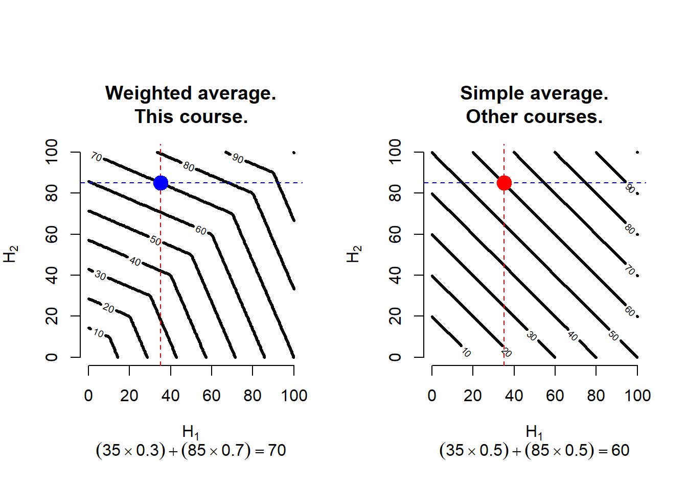

# Initial condition.
learn <- FALSE
# Initial inputs assigned to study the topic.
inputs <- c(read, time, effort, assistance, others)
# Learning process.
while (learn == FALSE) {
understand <- study(inputs) # Evaluate study function.
if (understand == FALSE) {
print("Add more inputs and try again.")
inputs <- inputs + 1
}
else { # Understanding is the way to learn.
learn == TRUE
print ("Well done!")
}
}Fundamentos Cuantitativos en Finanzas FCF.
Course syllabus. Fall 2024.
Abstract
A course syllabus is an academic document containing relevant information for students. This document serves as your ultimate guide to successfully completing this course. Please read it regularly and carefully. Within this document, you will find a comprehensive description of the course goals, rules, objectives, recommendations, grading details, a detailed schedule, activities, resources, references, and learning outcomes. The objective of this document is to provide you with complete certainty regarding what to expect from this course, starting from day 1 until the final exam. Based on my experience, reading this syllabus is positively correlated with students’ performance.
Back to Quantitative Finance with


1 Introduction.
Welcome to the course! My name is Martín. I hope that at the time you are reading this document you, your family and friends are all well.
1.1 Distance and face-to-face learning.
The content of this syllabus applies to any learning format, including face-to-face, blended or fully distance learning.
Distance learning is an educational method in which students are not physically present on school premises. In my experience, distance learning courses can be just as good as traditional in-person learning. Students may have their preferences, but I believe you (as students) should be able to learn under a wide variety of changing circumstances. In fact, recruiters often seek applicants who can demonstrate adaptability to unfamiliar environments and respond positively to unexpected changes and new ways of working. So, do not be afraid of online courses or distance learning schemes. If you approach them with a positive mindset, not only you can learn a lot, but you can also develop valuable skills that are increasingly sought after in the job market.
The first distance learning course I taught was in September 1999, and I have been into distance learning since then as a postgraduate student and professor. My growing research network consists of colleagues in Chile, Ireland, UK, Italy and Spain. Even though we physically meet about once a year, most of the time we work remotely and we are quite used to it. It is important to know how to collaborate in virtual environments just as well as we do in face-to-face formats, including the available technology that allows us to shorten physical distance between us.
I have vast experience with face-to-face, blended and distance learning in all its variants, and I hope this experience can contribute to help you complete this course successfully. Welcome again!
1.2 About me.
I am currently a professor of finance and economics at UDEM. I regularly collaborate with The University of Manchester at the Alliance Manchester Business School, and SOAS University of London at the Centre for Financial and Management Studies (CeFiMS), among others universities.
My academic profile, including my full and updated curriculum vitae, is here. These are my postgraduate studies and a description of my professional background.
Areas of expertise. Finance, Economics, Statistics, Data Science.
Research interests. Empirical asset pricing; beta and SDF pricing models and tests; financial econometrics; GMM estimation and inference; portfolio allocation models and performance; computational finance; data science applications in business.
Education. I have a Postdoc in Finance from The University of Manchester; a PhD in Quantitative Finance from the University of the Basque Country; a Doctor Europaeus mention from the European University Association. I have four MSc degrees in Statistical Learning and Data Mining; Modern Applied Statistical Methods; Quantitative Finance; and Finance. I have three University Expert degrees in Statistical Learning and Data Mining; Statistical Techniques for the Scientific Analysis of Data; and Advanced Methods of Applied Statistics from EGADE and UNED. I have a BS in Economics from Tecnológico de Monterrey.
I have also completed more than 20 professional training programs in various areas, including data science, sustainable finance, migration, and innovation. These programs were offered by prestigious institutions such as Strathclyde Business School, University of Bath, Duke University, RISIS Research Infrastructure for Science and Innovation Policy Studies, Università della Svizzera Italiana, AIT Austrian Institute of Technology, The Alan Turing Institute, Universidad Complutense de Madrid, Manchester Institute of Innovation Research, among others.
Research. I am a researcher in the area of quantitative finance. I have held a couple of full-time research positions as a one-year pre-doctoral Marie Curie research fellow supported by the Sixth European Community Framework Programme, and a two-year post-doctoral research fellow position both at The University of Manchester, Alliance Manchester Business School, and the Centre for the Analysis of Investment Risk. My research has been published in 3-star journals according to The Chartered Association of Business Schools, including Journal of Empirical Finance, Quantitative Finance, and Journal of Financial and Quantitative Analysis (research assistance). My research has been presented in numerous research seminars in the UK, Spain, Mexico, Sweden and Ireland. My research has also been presented in prestigious international conferences including the Spanish Association of Finance Forum; Eastern Finance Association (USA); World Congress of the Econometric Society (Italy); French Finance Association; and Econometric Research in Finance among others. I collaborate as reviewer and editor for several academic journals in the areas of finance.
Teaching. I have been a lecturer in economics, finance and data science for under and postgraduate levels at different universities in Mexico and the UK for the last 25 years. Also, I have supervised more than 100 dissertations at under and postgraduate academic programs of schools including the London School of Business & Finance; University of London, SOAS University of London; The University of Manchester; Universidad Complutense de Madrid, UDEM, among others. Also, I have experience in continuous education, consulting, and executive training in the area of finance.
I have a passion for art, particularly painting and music, as they embody the expression of human creativity and imagination. During my free time, I enjoy playing my Yamaha digital piano. I have also been actively involved in music as a keyboardist, piano player, and orchestra director. I have gained extensive experience in this field through performances at live concerts in Mexico and Europe, including piano solo concerts and musicals organized by the Tecnológico de Monterrey (Campus Monterrey) for approximately a decade.
2 Overview.
This section includes the course objectives, mechanics, and important information about academic integrity.
2.1 FCF description.
Quantitative fundamentals play a crucial role in understanding modern finance for several reasons:
1. Decision-making and risk management: Quantitative fundamentals provide the foundation for making informed financial decisions and managing risk effectively. By analyzing key financial metrics, such as revenue, expenses, profitability, and cash flow, investors, analysts, and managers can evaluate the financial health and performance of companies. This information helps in determining investment opportunities, assessing creditworthiness, and identifying potential risks.
2. Valuation: Quantitative analysis is instrumental in valuing financial assets, such as stocks, bonds, and derivatives. Methods like discounted cash flow (DCF), price-to-earnings (P/E) ratio, and other financial models rely on quantitative fundamentals to estimate the intrinsic value of an asset. Understanding these fundamentals is essential for accurately valuing securities and making informed investment decisions.
3. Financial modeling and forecasting: Quantitative fundamentals form the basis of financial modeling and forecasting. Through these models, analysts and investors can project future financial performance, estimate earnings growth, and evaluate the impact of various factors on financial outcomes. Financial models often incorporate historical data, market trends, and quantitative relationships to provide insights into the potential outcomes of investment decisions.
4. Portfolio management: Quantitative fundamentals are vital in constructing and managing investment portfolios. Modern portfolio theory (MPT) relies on quantitative analysis to optimize asset allocation and balance risk and return. By assessing various quantitative factors, such as historical returns, volatility, correlation, and covariance, investors can create diversified portfolios that align with their risk preferences and investment goals.
5. Performance measurement: Quantitative fundamentals are used to evaluate the performance of investments and financial strategies. Metrics like return on investment (ROI), return on equity (ROE), and risk-adjusted return measures are derived from quantitative analysis. These metrics help investors and managers assess the efficiency and profitability of their investment decisions and compare their performance against benchmarks.
6. Financial markets and trading: Quantitative fundamentals are integral to understanding financial markets and executing trading strategies. Market participants use quantitative analysis to analyze market trends, identify patterns, and develop trading algorithms. Quantitative factors, such as supply and demand dynamics, market liquidity, and price movements, are critical inputs for making trading decisions and managing investment positions.
Overall, understanding quantitative fundamentals is crucial in modern finance because it enables informed decision-making, effective risk management, accurate valuation, financial modeling, portfolio management, performance measurement, and successful trading strategies. By leveraging these fundamentals, individuals and institutions can navigate the complex world of finance and enhance their ability to achieve their financial objectives.
2.2 Objectives.
The main objectives of this course are threefold:
Understanding course topics. The course aims to ensure that you have a solid understanding of the topics covered. This includes gaining knowledge of various models and techniques in the areas of financial economics and quantitative finance. You will delve into the concepts, theories, and principles underlying these subjects.
Applying quantitative techniques. The course emphasizes the application of quantitative techniques and models. You will learn how to implement these models by translating the original paper-based formulations into functional computer code. Through practical exercises and assignments, you will gain hands-on experience in using computational tools to analyze financial data, generate insights, and interpret results.
Developing financial competences. The course is designed to help you develop the necessary competences to excel as a financial professional, practitioner, or junior researcher. By engaging in the learning activities and utilizing the available resources, you will enhance your professional skills in financial analysis, modeling, and reporting. The course aims to equip you with the practical abilities and knowledge required to thrive in the field of finance.
Overall, the course provides a comprehensive learning experience that combines theoretical understanding with practical application. It aims to prepare you for a successful career in finance by fostering your proficiency as a financial professional and enabling you to contribute as a practitioner or junior researcher.
To achieve the objectives of the course, you are required to undertake various tasks throughout the semester. These tasks can be summarized as follows:
Reading. You are expected to engage in extensive reading to grasp the concepts and theories covered in the course. This involves studying the recommended textbooks, academic papers, and other relevant resources provided. Reading is fundamental for understanding the subject matter.
Hard work. Success in the course will require dedicated effort and hard work. You need to actively participate in lectures, complete assignments and projects, and actively engage with the course material. It is important to invest sufficient time and energy into mastering the concepts and techniques taught.
Seeking assistance. Should you encounter difficulties or have questions, it is encouraged to reach me out for assistance
<martin.lozano@udem.edu>. I can help you to clarify concepts, resolve doubts, and ensure a deeper understanding of the material. I am available to support your learning journey.
It is worth noting that the provided pseudocode below is a simplified representation used for illustration purposes. While it may not directly run in R, it serves as an example to demonstrate the learning process. The actual learning process will be more intricate and involve a comprehensive exploration of the course topics, hands-on exercises, and practical applications.
Remember, persistence and determination are key to the learning process. Persistence refers to the quality or ability to continue striving towards a goal or completing a task despite facing difficulties, obstacles, or setbacks. It involves determination, perseverance, and the willingness to keep working towards a desired outcome, even when faced with challenges or discouragement. Persistence often requires a strong sense of motivation, resilience, and the ability to maintain focus and effort over an extended period of time. It is a valuable trait that can contribute to personal and professional success in various areas of life. By dedicating yourself to reading, working hard, and seeking assistance when needed, you will enhance your understanding and excel in the course.
2.3 Mechanics.
The course operates on the assumption that you will approach it with enthusiasm and a positive attitude, demonstrating a willingness to actively engage with the material and meet my expectations as professor. The following expectations are outlined:
Active participation. You are expected to be proactive and engaged throughout the semester. This includes completing the learning activities, assignments, and readings in a timely manner. Your active participation will contribute to a deeper understanding of the subject matter.
Understanding and application. The goal is for you to comprehend the course material and its practical applications to the best of your ability. This entails studying the subject matter thoroughly, grasping the underlying concepts, and being able to apply them in relevant contexts.
Course calendar. The course calendar, provided at the end of the syllabus Section 8, serves as a roadmap for the entire semester. It outlines the lecture topics, required readings, and upcoming activities, assignments, and exams. It is important to familiarize yourself with the course calendar and adhere to its timeline to ensure a smooth progression throughout the semester.
Time management. Given that some tasks may require more than a week to complete, it is crucial to manage your time efficiently. By planning ahead and allocating sufficient time to each task, you will be able to fulfill your course responsibilities effectively.
In this course, it is expected that you approach the required material proactively and conscientiously. This means dedicating time to studying the material in advance and engaging in independent practice. By doing so, you will create the necessary conditions to actively contribute to class discussions by providing valuable comments and asking thought-provoking questions.
Conscious and proactive study habits are important for several reasons. First, it allows you to stay on track with the course material and prevents you from falling behind. It ensures that you are familiar with the topics being covered and have a solid foundation to build upon during class. Moreover, engaging in advance study and practice enables you to take full advantage of the learning opportunities provided in the course. By actively exploring the material on your own, you can deepen your understanding, reinforce key concepts, and gain additional insights. This will enhance your learning experience and maximize the potential knowledge you can gain from the course.
On the other hand, if you choose not to engage in conscious study and practice, or you simply cannot given your current situation, you may find yourself struggling to keep up with the course requirements and may experience frustration. Falling behind can lead to a loss of interest, lower grades, and potentially even failure. Then, in order to mitigate the risk of failing the course and to optimize your learning outcomes, it is strongly recommended that you commit to consciously studying the required material in advance and engaging in independent practice as much as necessary. By doing so, you will be better prepared, actively participate in class, and increase your chances of success in the course.
In this video, students from The University of Melbourne share great tips and strategies about how they get the most out of university lectures.
In accordance with some of The Sustainable Development Goals by the United Nations, see UN (2015), all the compulsory readings and activity submissions are available in electronic format. Other complementary materials and activities may be incorporated or altered during the semester, depending on relevant news or events that do not currently exist or are hard to anticipate at the beginning of the semester. If that is the case, I will inform you in advance. As a student, you should be confident that all the course materials and activities are perfectly suitable for an undergraduate student enrolled in a prestigious world-class university. In other words, there will not be an intellectual challenge that you cannot overcome with the appropriate amount of enthusiasm, time, work, determination, and, if necessary, assistance. This course is designed in such a way that you can pass and learn as long as you invest the right amount of time and work.
I assume you are fully aware of the academic regulations dictated by the university, including class attendance and maximum absences allowed. If you are not familiar with them, please review the corresponding student regulations. In this course, we will adhere to those regulations.
2.4 Academic integrity.
Individuals with integrity demonstrate a high level of moral character and ethics, choosing to do what is right even when faced with difficult decisions or temptations. They are trustworthy, reliable, and have a strong sense of accountability. Integrity is an essential quality in personal relationships, professional settings, and society as a whole, as it fosters trust, respect, and fairness.
We pledge to uphold the highest standards of honesty and integrity, both for ourselves and our peers. Violations of academic integrity, including plagiarism and cheating, are strictly prohibited and may result in consequences such as failure of assignments, failure of the course, and additional disciplinary actions as per current regulations. Plagiarism is defined as presenting another person’s thoughts or words as one’s own, without proper acknowledgment or attribution. This includes copying from textbooks, other sources (including the Internet), or any material without giving due credit to the original source.
Please watch the following video about plagiarism taken from York St. John University about understanding plagiarism.
I strongly advise against constructing a piece of work by simply cutting and pasting or copying material written by others into something you submit as your own. Regardless of any pressure you may feel to complete an assignment, it is important to never succumb to the temptation of taking a shortcut and using someone else’s material inappropriately. This includes ChatGPT and other generative AI tools as this is a form of plagiarism with potentially serious consequences. You are free to use these AI as a learning tool, but not to answer graded activities.
See the following video to illustrate this point:
Ethical behavior is implicit in the course mechanics and rules, and it will be explicit in several topics throughout the course material. Following the indications of this syllabus is a simple way and a clear example regarding how we can effectively pursue ethical behavior. Ethics concerns are inherent in business, economics and finance activities because the professionals in these fields frequently manage resources to achieve a range of objectives, not exclusively maximize profits. Pursuing ethical behavior also helps us to build solid institutions, which is consistent with the United Nations 17 sustainable development goals, UN (2015). Managing own or third-party resources entails a high degree of responsibility because people often face the alternative to apply unethical strategies to achieve their own interests. A proper discussion of the ethical aspect in the decision-taking process including conflict of interests is necessary to increase the awareness of young professionals like you. In the end, following an ethical code as a business practice can contribute to strengthening or building your own reputation – one of the most significant assets you have, or are currently building.
Take a look at this video about integrity.
Integrity is particularly crucial in the realm of finance professionals due to the following reasons:
Trust and credibility. Finance professionals handle sensitive financial information, make critical financial decisions, and often act as stewards of other people’s money. Integrity is essential to establish and maintain trust and credibility with clients, investors, and stakeholders. Clients need to trust that their financial advisor or accountant will act in their best interests, provide accurate information, and handle their funds responsibly.
Ethical responsibility. Finance professionals have a significant ethical responsibility to act in an ethical and responsible manner. They must adhere to ethical codes of conduct, such as those set by professional organizations, and follow legal and regulatory requirements. Acting with integrity ensures that financial professionals prioritize ethical behavior, avoid conflicts of interest, and make decisions that are in the best interest of their clients or organizations.
Confidentiality and privacy. Finance professionals often have access to confidential financial information, including personal and sensitive data. Integrity is crucial in maintaining the privacy and confidentiality of this information. Professionals must handle financial data responsibly, protect client information, and maintain the highest standards of confidentiality and data security.
Risk management. Financial decisions and transactions involve risks, and integrity plays a critical role in managing these risks. Acting with integrity helps finance professionals accurately assess and communicate risks to clients or stakeholders. It involves being honest about the potential risks involved in investments, disclosing relevant information, and ensuring transparency in financial reporting.
Compliance and regulatory requirements. Finance professionals must adhere to various legal and regulatory requirements in their work. Integrity is essential in complying with these regulations, reporting accurate financial information, and avoiding fraudulent or deceptive practices. Acting with integrity helps professionals maintain compliance with laws such as anti-money laundering regulations, financial reporting standards, and tax laws.
Professional reputation. The finance industry relies heavily on reputation and credibility. Finance professionals with a reputation for integrity are more likely to attract clients, secure partnerships, and build long-term relationships. Conversely, a lack of integrity can quickly damage a professional’s reputation and have long-lasting negative consequences.
Industry ethics and public trust. The finance industry plays a significant role in the economy and society at large. Maintaining integrity within the industry is crucial for public trust and confidence in the financial system. Finance professionals with integrity contribute to the overall reputation and trustworthiness of the industry, helping to foster a healthy and reliable financial environment.
In summary, integrity is vital for finance professionals to establish trust, uphold ethical standards, protect confidentiality, manage risks, comply with regulations, maintain a strong professional reputation, and contribute to the overall integrity of the finance industry.
2.5 Sustainable finance.
I am certified as ‘carbon literate’ by the UN Climate Change Conference and Coventry University. The certification represents a robust understanding of the climate context and a commitment to recognizing ways to adjust our behavior to reduce our carbon footprint, as well as influencing our social and professional circles. My view is that one way of achieving a positive impact on the environment and society is to learn more about sustainable finance.
According to the European Commission, sustainable finance refers to the process of taking environmental, social and governance (ESG) considerations into account when making investment decisions in the financial sector, leading to more long-term investments in sustainable economic activities and projects. Environmental considerations might include climate change mitigation and adaptation, as well as the environment more broadly, for instance the preservation of biodiversity, pollution prevention and the circular economy. Social considerations could refer to issues of inequality, inclusiveness, labour relations, investment in human capital and communities, as well as human rights issues. The governance of public and private institutions – including management structures, employee relations and executive remuneration – plays a fundamental role in ensuring the inclusion of social and environmental considerations in the decision-making process.
In this course, you will be exposed to an introduction about sustainable finance, climate change and green economy. In particular, you will acquaint yourself with the basic skills and tools for applying the sustainable finance mechanisms to a real-world policy or business context.
Learning materials are taken from The One UN Climate Change Learning Partnership UN CC:Learn, which is a joint initiative of more than 30 multilateral organizations helping countries to achieve climate change action both through general climate literacy and applied skills development. UN CC:Learn provides strategic advice and quality learning resources to help people, governments and businesses to understand, adapt, and build resilience to climate change.
See the earth’s global average surface temperature in 2021 tied with 2018 as the sixth warmest year on record, according to an analysis by NASA:
Learning about sustainable finance is important as it enables individuals and organizations to make informed financial decisions that consider environmental and social factors, manage risks, comply with regulations, meet investor demand, and contribute to a more sustainable and responsible financial system.
3 Data science.
Data science is the study of extracting generalizable knowledge from data. Being a data scientist requires an integrated skill set that encompasses operations research, statistics, and computer science, along with a solid understanding of formulating problems in specific fields to achieve effective solutions. This course aims to introduce you to this rapidly growing field and equip you with its basic principles, tools, and general mindset within the context of business. Ideally, you will learn to apply financial and economic concepts, models, techniques, and tools to analyze various aspects of data science practice. This includes data collection and integration, exploratory data analysis, descriptive and predictive modeling, visualization, evaluation, and effective communication. For a comprehensive introduction to the application of data science in finance, I recommend referring to Hull (2020).
In this course, the goal is not to become a data scientist, but rather to lay the foundation for further specialization in this field through postgraduate studies. Nowadays, many undergraduate students recognize the need for basic knowledge in data science and machine learning to thrive in a world where these areas have an increasing impact on job opportunities. In the past, computer literacy was essential for all executives. Today, executives are expected to be comfortable managing large data sets and collaborating with data science professionals to drive innovation and enhance productivity.
Learning these computational skills aligns with the purpose of developing STEAM (Science, Technology, Engineering, Arts, and Mathematics) skills during your undergraduate studies in business. For more information on STEAM skills, you can refer to Boon Ng et al. (2019). In my opinion, learning opportunities for undergraduate students should include authentic tasks that are grounded in real-world business contexts. Authentic tasks typically involve ill-defined problems, complex or multi-step questions, multiple approaches to problem-solving, and sub-tasks that integrate across disciplines. This course incorporates some of these STEAM principles and ideas into various learning activities.
Data science has a strong connection with finance and economics. In this course, we will explore the integration of data science concepts and tools within the context of digital humanities. Digital humanities is an interdisciplinary field that encompasses research, teaching, and innovation at the intersection of computing and various humanities disciplines, including economics and finance. It is inherently methodological and encompasses the investigation, analysis, synthesis, and presentation of information in electronic form. Digital humanities studies the impact of these digital media on the disciplines in which they are utilized and examines the contributions of these disciplines to our understanding of computing. If you are interested in delving deeper into the concept of digital humanities and exploring the ongoing vibrant discussions in this field, I recommend referring to Klein and Gold (2019). Additionally, to gain insights into data science and data ethics informed by the principles of intersectional feminism, which aligns with the fifth United Nations Sustainable Development Goal on gender equality UN (2015), you may find D’Ignazio and Klein (2020) to be a valuable resource.
To learn more about the 17 United Nations Sustainable Development Goals:
3.1 .
R is a programming language and free software environment designed for statistical computing and graphics. It is supported by the R Foundation for Statistical Computing and widely utilized by statisticians and data miners for developing statistical software and performing data analysis. Python, on the other hand, is an interpreted, interactive, and object-oriented programming language. It incorporates features such as modules, exceptions, dynamic typing, high-level dynamic data types, and supports multiple programming paradigms including procedural and functional programming.
Getting started with R and Python has become increasingly accessible due to the abundance of free resources available on the Internet. This includes Artificial Intelligence (AI) tools and specialized AI programming assistants. All it takes is dedicating the right amount of time and effort to learn these languages. The perceived difficulty of computer programming is often a significant barrier for some individuals, but once they realize that it is not as challenging as they initially thought, their progress improves significantly.
This course integrates data science, data analysis, and computational finance using R, R Core Team (2024) and Python as the primary tools. As a result, you will have the opportunity to learn or further enhance your coding skills, which will enable you to apply economic and finance models in practical scenarios. It is important to note that this course is not primarily focused on computer science, and therefore we have limited time to cover mandatory finance-related material. To overcome this limitation, you will engage in hands-on assignments, collaborate with your peers, use AI specialized tools, and utilize online resources such as Swirl lessons and/or DataCamp courses to learn R and Python.
There are various approaches to learning basic data science and developing the ability to transform information into valuable business intelligence. Learning to code is one method that I highly recommend. Coding allows you to train your brain to think more efficiently and productively, enabling you to tackle complex problems and generate innovative solutions. In today’s finance job market, there is a growing demand for candidates with knowledge in the field of data science or computational finance. This is primarily because such expertise enhances creative problem-solving skills and proficiency in data analysis.
Listen to Steve Jobs:
I understand that learning programming may seem challenging and frustrating at first for some people. If this is your case, I want to assure you that it is not as difficult as it may initially appear. In fact, it can be an incredibly rewarding experience that opens up a whole new world of possibilities. By learning programming languages like R and Python, you will gain access to free and open-source software that is supported by a generous online community. This community is always ready to assist and provide guidance, making your learning journey much easier. Additionally, you will discover the incredible advancements in scientific document production that come with these tools, offering limitless possibilities compared to commercial software.
For a university student new to programming, using AI-based assistants for R and Python coding can significantly boost productivity and enhance the learning experience. AI assistants provide real-time code suggestions, autocomplete features, and immediate feedback, which can help beginners write code more efficiently and with fewer errors. These tools can also guide students through best practices and advanced concepts, accelerating their learning curve. Additionally, AI-powered error detection and debugging can be invaluable for new programmers, helping them identify and fix mistakes quickly, thereby deepening their understanding of coding principles. The ability to refactor code efficiently and maintain consistency across projects can further instill good coding habits and standards, making the transition from learning to real-world application smoother.
However, there are potential drawbacks to consider. Over-reliance on AI assistants might hinder the development of essential problem-solving skills and a deep understanding of programming concepts. Students might become too dependent on automated suggestions and fail to engage deeply with the code they are writing. Moreover, AI suggestions are not always accurate or contextually appropriate, and inexperienced programmers might struggle to discern which recommendations to follow. It’s important to note that AI tools tend to be more effective when users already possess some programming skills, as they can better evaluate the AI’s suggestions and integrate them appropriately. Additionally, the learning curve associated with integrating and using AI tools effectively, along with potential costs for advanced features, might be challenging for students with limited resources. Balancing the use of AI assistants with traditional learning methods is crucial to develop both practical skills and a robust understanding of programming.
3.2 Commercial alternatives.
Throughout your undergraduate studies, you will be expected to acquire proficiency in various commercial software programs, such as Microsoft Excel, SPSS, STATA, E-Views, and many others. I strongly encourage you to develop your skills in these programs, particularly if their usage is required by your professor. However, it is crucial to recognize that these programs are owned by private firms and primarily focused on generating value for their shareholders. Consequently, there is no guarantee that the associated file formats will remain accessible or even exist in the future, which can adversely impact reproducibility.
While I will never discourage you from learning commercial software programs like the ones mentioned above, I also want to emphasize the alternative option of learning and utilizing user-oriented computer languages, such as R or Python, for conducting rigorous data analysis in the fields of economics and finance. These languages are supported and continuously enhanced by a large and active scientific community, providing a plethora of online resources to support eager beginners like yourself.
Commercial software products like the ones mentioned above are undoubtedly important in the job market. However, it is crucial to recognize that the primary interaction with these programs relies on using a mouse to navigate through pre-defined, limited, and inflexible menus. This type of user interaction is often fleeting and unrecorded, resulting in many of the choices made during a quantitative analysis going undocumented. This lack of documentation poses significant challenges as it becomes difficult to trace the steps taken during an analysis and hampers the ability to replicate or extend the analysis in different contexts. In contrast, coding enables us to conduct and produce reproducible research. Learning how to code is akin to writing a cooking recipe, where each time you execute the code, the desired outcome is achieved. If you want to change the flavor from vanilla to chocolate, you do not need to start the entire process from scratch. Instead, you can simply modify the flavor parameter from vanilla to chocolate, execute the code, and voilà!
Commercial software products often come with high licensing fees and rely on opaque ‘black boxes’ — systems or processes where the internal workings are hidden or unknown — to generate a range of results. These black boxes pose a problem as they provide little insight into the underlying assumptions and procedures used to produce the final outcomes. Users may be left with a false impression that they can perform data analysis without fully understanding the intricacies involved. While this convenience may have its place in specific and limited scenarios, it hinders the exploration and customization necessary for innovative and improved applications.
In contrast, embracing languages like R and Python provides a versatile alternative to point-and-click programs. With these languages, you can write scripts to program algorithms for economic and financial analysis and visualization. By delving into the details of the computation, you gain a deeper understanding of the process and unlock possibilities for customization and innovation.
In light of this, I encourage you to embrace the shift from clicking to scripting. Look at this video to find out:
While chefs may need to invest in ovens, kitchen items, and ingredients, in the fields of economics and finance, many of our inputs, such as data and technology, are freely available. R and Python, being open-source software, come at no cost. By acquiring coding skills, you gain the ability to share, expand, reproduce, and innovate, ultimately generating original empirical results that serve as crucial inputs for research outputs, including your dissertation or other professional projects.
3.3 Cloud IDE.
A web-based Integrated Development Environment (IDE) is an online platform that provides developers with a suite of tools for writing, editing, debugging, and testing code directly within a web browser. Unlike traditional desktop IDEs, web-based IDEs require no local installation and can be accessed from any device with internet connectivity. These platforms often support multiple programming languages and come equipped with features like syntax highlighting, code completion, version control integration, and collaborative editing.
Some examples of cloud IDE:
Deepnote is a cloud-based data notebook that offers a new kind of collaboration, compatible with Jupyter. In this course, most of the graded activities will be conducted in Deepnote. With Deepnote, you can easily work on your data science projects in real-time and in one centralized location with your colleagues.
Google Colab, short for Google Colaboratory, is a free, cloud-based platform that allows users to write, run, and share Python code within a Jupyter notebook environment. It is particularly popular for data science, machine learning, and deep learning tasks, as it provides easy access to powerful computing resources, including GPUs and TPUs, without requiring any setup. Users can import and work with datasets from various sources, integrate with Google Drive for storage, and use a wide range of Python libraries. Colab facilitates collaboration by allowing multiple users to work on the same notebook simultaneously and share their work easily. It is widely used in both educational and research settings for prototyping, experimentation, and collaborative projects.
Datalab from DataCamp is an interactive coding environment designed for learning and practicing data science and analytics skills. It is part of DataCamp’s educational platform, offering users access to a rich set of tools and resources for working with data. In Datalab, users can write and execute code in various programming languages such as Python, R, and SQL, with access to popular data science libraries and frameworks. The environment is integrated with DataCamp’s extensive collection of courses, allowing learners to apply their knowledge through hands-on exercises and projects. Datalab also features real-time coding collaboration, enabling multiple users to work on the same project simultaneously, fostering teamwork and peer learning. Additionally, it includes an integrated AI assistance tool that provides real-time feedback, code suggestions, and debugging help, enhancing the learning experience and making it easier for users to overcome coding challenges. This combination of features makes Datalab a powerful and user-friendly platform for developing data science skills.
In this course you will be asked to complete graded activities in Datalab. However, in case it fails you can use other web based or desktop IDE alternatives.
I find DataCamp a very good alternative to learn data science. Normally, people have to pay for a DataCamp account to learn data science, and some firms have to pay for this kind of training to help their employees to learn R or Python. Current fees for a DataCamp premium individual account is about 33.25 USD per month, about 200 USD for the semester. However, as my student, you have free individual access for full access to all DataCamp courses and resources including DataCamp’s Workspaces for the whole semester as long as this firm keeps its promise to make this access free for my students. In exchange, DataCamp ask for a mention on social media, please find all the resources and instructions on these communication guidelines. Are you able to provide this?
To learn more about DataCamp updates:
3.4 Desktop IDE.
A desktop Integrated Development Environment (IDE) is a software application installed locally on a computer that provides a comprehensive set of tools for software development, including code editing, debugging, and testing functionalities. Desktop IDEs typically offer robust features such as syntax highlighting, code completion, refactoring tools, and integrated version control. They are optimized for performance and often provide extensive customization options and plugin support to tailor the development environment to specific needs. Working with a cloud-based alternative, instead of a desktop IDE is similar to working with Google Docs instead of MS Word. We are all familiar with both local and cloud-based work environments and understand the importance of data privacy and regular file backups.
Some examples of cloud IDE:
RStudio is an integrated development environment (IDE) specifically designed for the R programming language, which is widely used for statistical computing, data analysis, and visualization. RStudio provides a comprehensive set of tools that enhance productivity, including a source editor with syntax highlighting, code completion, and smart indentation. It features an interactive console for running R code, a powerful debugger, and tools for plotting and managing packages. RStudio also includes integrated support for version control systems like Git, making it easier to manage and collaborate on projects. Additionally, it supports the development of R Markdown documents, Shiny web applications, and interactive dashboards, allowing users to create and share dynamic and reproducible reports. RStudio is also Quarto-friendly, enabling the creation of multi-format documents and reports. Furthermore, it supports the use of Python, allowing users to seamlessly integrate Python code and libraries into their workflows, making RStudio a versatile and powerful platform for data science and analytical tasks.
The main difference between R and RStudio is that R is the core programming language, while RStudio serves as the user-friendly integrated development environment (IDE) for developing data science projects. When working with R, you will need to download and install both R and RStudio. However, you will primarily use RStudio as your interface for coding in R. Behind the scenes, your computer will utilize the R program to execute the calculations. Moreover, RStudio is free and offers the convenience of seamlessly integrating multiple programming languages, such as R and Python, within a single data science project. This feature is particularly useful when collaborating with a team proficient in different programming languages.
Here is a video about RStudio (a bit old as there are newer versions by now):
In this course, you will be asked to complete graded activities (homework assignments and exams) using the cloud based alternatives, specifically DataCamp’s Datalab. However, you are required to install RStudio in your own computer.
If you have not yet installed the necessary programs on your computer, please download R, Python, and RStudio from the following websites: https://www.r-project.org/, https://www.python.org/downloads/, and https://posit.co/downloads/, respectively. In the reference list at the end of this document, you will find some helpful YouTube installation guides that explain the step-by-step process of downloading and installing these programs from scratch. These videos have proven to be useful for my previous students. However, if you happen to come across a new and improved video, please feel free to share it.
Easter egg. I may need some volunteers to help other fellow students install RStudio and ensure that it can run both R and Python code on their own computers. These volunteers may need to familiarize themselves by reviewing YouTube tutorials on how to correctly install it on PC and Mac. Volunteers need to demonstrate that they have successfully assisted other students enrolled in this class in completing their installations. I will assign one sticker to each volunteer for every group of three students they provide help to. The evidence must be uploaded in the discussion forum (first partial) before our first partial exam. Here is a sample of valid evidence:

Please note that there are other alternatives to RStudio like Anaconda and Visual Studio Code. If you were to ask, my personal favorite is RStudio. In fact, I created this syllabus using RStudio with R markdown and Quarto.
3.5 Why it is important?
You may be aware that just a few years ago, economic agents with privileged access to information had a clear comparative advantage in business and decision-making. However, thanks to technology, information and data are now widely accessible, eradicating the possibility of gaining a competitive edge solely through information access. With data availability no longer being a distinguishing factor, knowledge has emerged as a critical aspect in business. In the present day, it is not merely about having access to information; rather, it is about understanding how to leverage the increasing volume of data to create value in business. Manipulating and transforming data into valuable business tools and informed decisions has become an essential skill for all business professionals.
I understand learning programming languages could represent a source of uncertainty and stress for some of my students. This is why I have developed and gathered a vast amount of varied and free resources to learn R and Python in the reference section of this syllabus. In fact, you have more free resources that you need in the semester. It is true that you will have to learn a few things on your own, and it is true you will have to investigate to learn some other things. You are expected to learn how to learn as well and as quickly as you can because in the job market you need to constantly learn and apply new knowledge, and solve problems that currently do not exist. A competitive graduate is not the one who learns what was taught in class, a competitive graduate is the one who also manages to learn how to learn.
It is important to remember that university is a time for learning and exploring new things. Learning new languages like R and Python is just one aspect of this educational journey. While it may require some time and effort initially, the benefits and knowledge gained far outweigh the investment. These skills will not only enhance your academic experience but also provide you with valuable tools for future endeavors. It is common to face temporary frustrations during the learning process, but I encourage you not to let them dampen your enthusiasm and hinder your overall learning experience at university. Embrace the challenges, seek help when needed, and remember that the rewards of mastering programming languages are well worth the initial difficulties.
In my opinion, English serves as the predominant language for conducting research and engaging in business endeavors. Mathematics and statistics act as languages that enable us to comprehend the workings of nature. Computer languages, on the other hand, facilitate direct communication with computers, enabling us to conduct statistical experiments within the business context. Considering that computers are an integral part of our lives, it is essential to learn how to communicate with them not only at a basic user level but also at a programmer level. As aspiring professionals, it is crucial to distinguish ourselves from our peers and prepare for the changing conditions of the job market, particularly in the field of financial economics. In my perspective, it is vital for individuals to strive for proficiency in these three forms of interaction with our environment, irrespective of their specific professional business expertise: English, mathematics, and coding.
4 Resources.
Academic resources encompass a wide range of materials, tools, and sources of information specifically designed to support and enhance learning, research, and scholarly pursuits in an academic setting. These resources play a crucial role in facilitating knowledge acquisition, promoting critical thinking, and advancing scholarly activities within the academic community.
4.1 Learning resources.
Here is a list and description of the available resources to help you learn the subject. My advice is to utilize as many resources as possible, as they will enable you to grasp the subject matter and develop the necessary professional competences.
Professor. I have extensive experience as an academic and researcher, along with numerous postgraduate studies. I am willing to assist you in better understanding the course topics. If you need any help, feel free to contact me <martin.lozano@udem.edu> and follow my advice.
Please watch the video about professors:
Class sessions. During our class sessions, we will explain and discuss specific topics, address questions, review your study progress, and occasionally conduct brief activities. Please keep in mind that the time available during class sessions is limited, and we may not be able to cover every topic in full detail. To ensure comprehensive coverage, we will utilize other resources and learning activities. It is expected that you attend on time, actively participate, and engage in our discussions. I recommend using your computer during the sessions as you may need to access an IDE, view the PDF textbook, or refer to your own homework.
For Zoom sessions, you have the option to keep your camera either on or off, as we will often be sharing the screen during class, or you will be doing an activity. To provide convenience, unless otherwise specified, class Zoom sessions will be recorded and made accessible to you. Please note that occasional internet service disruptions during class sessions are a risk we all face. The Zoom link to join the class can be found in Blackboard and in Section 8.
Please watch the following video for a valuable recommendation from Prof. Fleisch, which is applicable to both online and face-to-face sessions:
Review sessions. We have review sessions for assignments and exams, which take place before the assignment submission deadline and prior to the exams. These sessions provide a great opportunity to ask questions and enhance your chances of achieving higher marks in both assignments and exams.
Please see some recommendations about review sessions:
Discussion forums. There are three discussion forums available for us to interact and engage with one another. Each forum corresponds to a different part of the course: the first, second, and third partials. The benefit of the discussion forums is that everyone can track the progression of discussions and actively participate. The logical flow of ideas remains recorded, allowing you to receive my feedback and comments. Since our class sessions have limited time, we may occasionally utilize the discussion forums. Additionally, we may use the discussion forums as a means to submit individual activities.
Email. You are welcome to contact me via email at any time: <martin.lozano@udem.edu>. I also send group emails containing important information, so please ensure that my email address is not marked as spam. If there is ever a delay in my response to an email or any other request, please feel free to insist and kindly remind me.
Meetings. Whether it is face-to-face or virtual learning, we can schedule 30-minute Zoom online meetings if you require additional assistance or have any other issues you would like to discuss with me. These meetings can be arranged either individually or in groups. Simply send an email to <martin.lozano@udem.edu> to inquire about my availability. If you need more time, we can arrange for additional meetings or extend the duration as needed. Here is the Zoom link for meetings: https://us02web.zoom.us/j/9209945512. For the class session Zoom link, please refer to the course calendar: Section 8.
Book. The book (or books) is one of the main pillars of this course. In my experience, learning primarily occurs through reading and then reinforcing the concepts through practical application, although there are various other activities included in this course. The authors of the book are esteemed experts in their respective fields: John C. Hull from University of Toronto; Frank Fabozzi from Johns Hopkins Carey Business School; Richard A. Brealey from London Business School; Stewart C. Myers from Sloan School of Management, Massachusetts Institute of Technology; Franklin Allen from Imperial College London; Rob J. Hyndman and George Athanasopoulos from Monash University; ad Eugene F. Brigham and Joel F. Houston from University of Florida. These books are not only suitable for intermediate and advanced undergraduate degrees but also for first-year master’s degrees. I prefer using the original versions of the books rather than translations because, in my experience, the translations may not always match the quality of the original English version and, in some cases, may not be available.
Tutorials. I have created a series of specialized online tutorials that provide step-by-step instructions on implementing various topics and estimating financial and economic models using data. These tutorials aim to help you bridge the gap between the theoretical concepts presented in the textbook and the practical implementation in R code. This approach, often referred to as literate programming, allows for a seamless transition. You can access my tutorials in my GitHub public repository, via GitHub Pages: Quantitative Finance with R.
Others. All learning resources described above represent a good resource for your own study of the course material. There are plenty of Internet resources that you will have to use, from databases, YouTube videos, GitHub public repositories, specialized programming blogs, AI tools, books, electronic books, etc. See the resource list at the end of this document for further details. You are encouraged to read articles, reports and news on your own to enhance and expand your understanding about how theoretical concepts relate with current real-life events. The Economist, The Financial Times, The Guardian, The Wall Street Journal, MarketWatch, Reuters, Bloomberg, Bureau of Economic Analysis, Banxico, Project Syndicate, The New York Times, El Financiero (México), El Confidencial (Spain), OECD, are a good way to grasp contemporary insights related with this course. Other references to support your learning process include economic and financial reports from private banks such as Banamex and BBVA, and think tanks websites such as The Mexico Institute, México cómo vamos, CIDAC, IMCO, COMEXI, among many others. My advice in this respect is rather simple: the more you read the more you learn.
5 Activities.
Learning activities are structured tasks or exercises designed to facilitate the acquisition of knowledge, skills, and understanding in an educational context. They are intended to promote active engagement, deepen understanding, and support the achievement of specific learning objectives.
This course is conducted in both Spanish and English. Most learning resources are in English, and exams and homework assignments are to be submitted in English. However, discussion forums, emails, and class sessions will be conducted in Spanish.
The learning activities are classified into graded, non-graded, and extra marks categories. Graded activities account for 100% of your final grade. Non-graded activities are relevant for your learning but are not included in the grading process. Therefore, failure to complete them will not result in any mark deduction. Extra marks are awarded as a bonus to your next partial exams or final exam, so completing extra marks activities increases the maximum mark possible. Furthermore, learning activities are classified as either individual or group activities.
5.1 Exams.
We have two partial exams, \(E_1\) and \(E_2\), which together contribute 40% to the final grade, as well as one final exam, \(E_F\), which accounts for 30% of the final grade. In total, these three exams represent 70% of the final grade, while the remaining 30% consists of two homework assignments, denoted as \(H_1\) and \(H_2\).
All the topics covered in this course will be evaluated in the exams. If you aim to achieve an outstanding final grade, I strongly advise you to take thorough class notes throughout the semester.
Please take a look at this video about taking notes:
This one is good as well. In this video, students from The University of Melbourne talk about using digital tools to take notes and stay focused.
When? The exams will be conducted as per the course calendar Section 8, aligning with the official dates specified by the university for partial and final exams. Both \(E_1\) and \(E_2\) will be 1.5-hour activities conducted during the class session, while \(E_F\) will last for 2 hours. In the case of 3-hour class sessions, the \(E_1\) and \(E_2\) exams will be administered in the first part of the class, and we will review the exam answers on the same day during the second part of the class session. Note that the final exam date may need to be adjusted for administrative reasons in the case of students who are graduate candidates.
Please consider the following recommendations about exams:
Individual or in groups? All exams \(E_1\), \(E_2\), and \(E_F\) are group activities, with a maximum of 4 students per group. If there are more than 4 students in a group, a significant mark deduction will be applied. You have the freedom to define your own groups, and these groupings will remain fixed throughout the semester. Each group will be assigned a distinctive name. These groups will also be used for the homework assignments \(H\). Please note that the class list may change during the semester due to late enrollments or dropouts. In such cases, group members may change, but the maximum number of students per group will remain the same. Your group will have private access to a Datalab project, where only your group members and I will have editing privileges.
Do all group members receive the same mark? Not necessarily. Individual activities may contribute to earning extra marks in \(E_1\), \(E_2\) and \(E_F\). Additionally, if a group member fails to contribute, they will receive a zero mark for that particular activity. While I assign a group mark that is the same for all group members, you are also required to complete a co-evaluation. Then, your individual exam mark is a combination of the group mark assigned by me, extra marks, and the co-evaluation marks assigned by you and your colleagues. Please find the full details in Section 6.
Where? Physical presence in the classroom is not required for taking the exams. You can complete the exams from any location of your choice, as they are conducted, answered, and submitted entirely in electronic format. Just ensure that you and the rest of your group have a stable internet connection. I will be available during the exams through Zoom, and while joining the Zoom session is not mandatory, please be aware that I will be accessible in case you need any assistance. The Zoom link for the exams is the same as the one assigned to the course. It is important to note that for 3-hour class sessions, the first part of the session is dedicated to taking the exam. During the second part of the class, you will need to log in to the Zoom session to review and discuss the answers for the \(E_1\) and \(E_2\) exams. I can create Zoom rooms for your group to answer the exam if you wish.
How many questions? For both \(E_1\) and \(E_2\), there will be a total of 4 questions, out of which you are required to answer 3. This allows you the opportunity to choose the 3 questions that you feel most confident about. As for \(E_F\), there will be 5 questions, and you are expected to answer 4. All questions carry equal weight. It is important to note that attempting to answer all the exam questions is not recommended, as it may result in a significant deduction of marks. The \(E_F\) covers all the topics and activities covered in the course. To ensure convenience, one question from \(E_1\) and one question from \(E_2\) will be included in \(E_F\) with minor modifications. This means that if you have prepared well for \(E_1\) and \(E_2\), you should be able to answer at least 50% of the \(E_F\) correctly. However, if you take the exam on a different date for any reason, your \(E_1\) or \(E_2\) will consist of 3 questions instead of 4. In this case, you will not have the advantage of leaving one exam question unanswered. The same principle applies to the \(E_F\).
What are typical exam questions? I always allow my students to retain their own partial exams, so it is possible that you can find previous partial exams. It is important to note that the course material evolves, and exam questions change every semester. However, reviewing old exams can provide you with a good understanding of the types of questions you can expect. I often include questions that require the use of R and/or Python, and the exam questions typically involve analysis and interpretation of results. To assist you in your exam preparation, we will have review class sessions and mock exams prior to each graded exam. If additional time is needed for review, we can utilize the discussion forum for that purpose.
What are the mechanics? The exam instructions will be available to you in an electronic format (.ipynb file) according to the course calendar. These instructions will automatically appear in Blackboard 5 minutes before the start of the class session. Once the file is available, you will need to download it and upload it to your own Datalab project, which should be named after your group. You and your group members will then collaborate online to solve the exam within the given time frame. There is no need to submit your exam file separately, as I have access to your Datalab project and can make an electronic copy for review and grading. It is important to ensure that you finish the exam before the specified time deadline. A few days later, you will receive your group’s mark, along with comments and feedback. Please note that during the exam, I may quietly visit your notebook to monitor your progress .
Can we open the textbook during the exam? Yes, you are allowed to use the Internet and all course materials during the exams. The purpose of the exams is to assess your reasoning, coding, and analytical skills rather than your ability to memorize concepts or perform internet searches. The exam questions are designed in a way that the answers cannot be found online, in the textbook, or in a test bank. Even AI tools frequently fail to provide full correct answers because most of the time questions are very specific and data oriented. While the questions are based on the course material, they are typically new and original. However, it is important to note that you are expected to answer the exam on your own, with the assistance of your own group, which should consist of no more than 4 students.
Are we going to review the exam answers? Yes, the class session after the exam is a Zoom session to solve the exam questions and discuss the correct approach to answering them. This applies only to \(E_1\) and \(E_2\); we cannot do it for \(E_F\) because classes are over by then. Exam questions are open-ended, and there are usually multiple ways to answer them correctly. Therefore, we will discuss a range of correct answers and common mistakes. Sometimes students are accustomed to closed-ended and singular answers, but that is often not the case in this course. If we require more time to discuss the exam answers, we can utilize the discussion forum, Datalab, or you can request an online meeting. This is important as we usually have limited time during the class session. Correcting your own mistakes in the exam is a valuable way to learn and practice for the final exam.
What if we fail to understand our own mistakes? Regardless of the activity, if you have any difficulty understanding your mistakes, it is expected that you reach out to me for clarification. In such cases, I may request you to attempt the questions again before we can discuss your specific mistakes in a meeting. It is important to note that the grade you receive in the exam, which includes individual extra marks and the co-evaluation, will be reported as your partial grade.
5.2 Homework assignments.
We have 3 homework assignments \(H_1\) and \(H_2\) (30% of the final grade), and one non-graded homework \(H_3\) in English. Assignments are good practice towards exams. Therefore, if you are looking forward to achieving an outstanding final grade in this course, my sincere advice is to start working on them as soon as possible. You can always show me your assignment progress and I can give you comments to improve. Datalab allow you to add comments to some specific part of your assignment, if you tag me as @martin.lozano@udem.edu then I will receive an email notification to review your specific question, then I will answer you back as a reply to your original comment and you will receive an email notification as well.
When? The fixed deadline to complete homework assignments is 10:00 a.m. on the day marked in the course calendar and there is no late homework policy at all. This basically means that if you fail to do the assignment, and/or if you have an empty, wrong, or corrupted file by the deadline, then the group mark is zero. This is important because sadly there are always some students who forget or simply ignore this information no matter how much I insist on this. The \(H_1\) is due a few days before \(E_1\); \(H_2\) is due a few days before \(E_2\); and \(H_3\) is due a few days before \(E_F\). I recommend taking enough time to plan and execute the required tasks in the assignments. Usually, low marks in this activity are not precisely because the assignment is difficult, but because the group started the assignment a couple of days before the deadline.
Individual or in groups? This is a group activity. These groups are the same for the exams. Please see the exam section above to review the definition of the groups and relevant policies.
Do all group members receive the same mark? The same as in the case of exams.
What are typical assignment questions? You should expect applied questions, some of them with a research-oriented approach. These questions will require you to develop computational code in R and/or Python. You will need to learn new things and conduct some research to be able to tackle them correctly. However, you are not alone in this process, you have a long list of resources described in this syllabus including my help in the form of synchronous Zoom meetings, or asynchronous communications via Datalab, or email communication.
What are the mechanics? This is similar to the case of exams. The assignment instructions will be available for you in an electronic format in Blackboard. As soon as the file is available, you will have to upload the instructions in your own Datalab project named as your group, and solve it online with your group. By the deadline, I will make a copy of your notebook to review it and mark it. There is no need to submit your assignment file as I have access to your Datalab project to make an electronic copy, you only have to make sure to finish before the deadline. A few days later, you will receive your group mark and some comments.
Are we going to review the homework assignment answers? Yes, we can review the answers during the class that coincides with the submission deadline. I may ask a team to present their answers in class.
What if we fail to understand our own mistakes? The same as in the case of exams.
Why is \(H_3\) a non-graded activity? The \(H_3\) is a special assignment that is designed to help you to practice and study for your final exam by learning from your previous mistakes. It has a deadline but it is a non-graded activity. Given that it is non-graded, this activity is optional. The \(H_3\) instructions are the following: You are required to (1) correct all your mistakes in all your previous graded activities, including all the four \(E_1\) and \(E_2\) questions, and assignments; and (2) complete all your missed extra mark activities, mostly from DataCamp and UN CC:Learn. The format and delivery is the same as the rest of the assignments. You can do it in group or individually. You will not receive \(H_3\) feedback as by then you will have access to all exam and assignment answers. In any case, you can ask me to review it if necessary.
5.3 Extra marks activities.
As with any extra mark activity, you do not lose marks if you fail to complete them, but you can get extra marks over your next individual exam if you complete them on time. In case you are taking two courses with me this semester, then the extra marks that you get in one course will be valid for the second and vice versa. This applies for differentiated extra marks activities.
For every DataCamp and UN CC:Learn course completed on time you get a nice PDF certificate that looks good in your CV and LinkedIn profile. It also can help you to have more tools to write your homework assignments, exams, write your own PEF, and apply for interesting jobs. The list of courses, skill tracks and projects that apply for this course is available in the course calendar.
DataCamp and UN CC:Learn courses. You will earn extra marks over your next exam, it could be \(E_1\), \(E_2\) or \(E_F\). These activities will be available for you to complete in your DataCamp Assignments section or UN CC:Learn courses, and listed in the course calendar as extra marks tag. The deadline is 10:00 a.m. on the day marked in the course calendar. DataCamp’s projects and courses can be completed in a few hours, but skill tracks and career tracks require more time as they include more than one regular course. Please note that UN CC:Learn courses may require a minimum mark to get a valid certificate.
The amount of extra marks is a function of the cumulative number of activities during the semester. In particular, you earn \(n+1\) extra marks per cumulative completed activity \(n\). This function provides incentives to complete as many activities as possible during the semester.
For example, if there are 7 activities (DataCamp and UN CC:Learn courses) in the semester allocated as 3 in the first partial, 2 in the second, 2 in the third, and you complete all of them on time, you earn:
- \(\displaystyle \sum_{n=1}^{3} (n+1) = 9\) extra marks over your \(E_1\).
- \(\displaystyle \sum_{n=4}^{5} (n+1) = 11\) extra marks over your \(E_2\).
- \(\displaystyle \sum_{n=6}^{7} (n+1) = 15\) extra marks over your \(E_F\).
However, if there are 7 activities (DataCamp and UN CC:Learn courses) in the semester allocated as 3 in the first partial, 2 in the second, 2 in the third, and you complete three, one in each period, you earn:
- \(\displaystyle \sum_{n=1}^{1} (n+1) = 2\) extra marks over your \(E_1\).
- \(\displaystyle \sum_{n=2}^{2} (n+1) = 3\) extra marks over your \(E_2\).
- \(\displaystyle \sum_{n=3}^{3} (n+1) = 4\) extra marks over your \(E_F\).
Some students may have completed a DataCamp or UN CC:Learn activity in the past. If your certificate is older than the starting date of this current academic term, then it is not valid and you have the option to substitute it.
- You can substitute it with one of the following DataCamp Career Tracks: (1) Big Data with R; (2) Data Scientist with R; (3) Shiny Fundamentals with R; (4) Intermediate Tidyverse Toolbox; (5) Statistician with R; (6) Machine Learning Scientist with R; (7) SQL Fundamentals; (8) Data Scientist with Python; (9) Data Analyst with Python; (10) Machine Learning Scientist with Python; (11) Data Scientist Professional with Python; (12) AI Fundamentals; or (13) Tableau Fundamentals. If this is the case, please let me know and share your certificate with me by email before the deadline so I can assign the corresponding extra marks.
- You can substitute it with one of your choice as long as you substitute a course by another course or a skill track for another skill track. If this is the case, please let me know and share your certificate with me by email before the deadline so I can assign the corresponding extra marks.
- In case UN CC:Learn does not allow you to obtain a newer dated certificate, you can substitute it with one of the following: (1) Indicators for an inclusive green economy: Advanced course; (2) Green Fiscal Policy; (3) Green Economy and Trade; (4) Carbon Taxation; (5) Open Online Course on Gender and Environment; (14) other you may want to do given my written authorization. If this is the case, please let me know and share your certificate with me by email before the deadline so I can assign the corresponding extra marks.
Stickers. There are some opportunities throughout the semester to get extra marks. In this course, extra marks are allocated in the form of stickers, every sticker stands for 5 extra marks on your next exam \(E_1\), \(E_2\), or \(E_F\). They are called stickers because I give real stickers to my students. Stickers are assigned by merit. It is not very easy to get a sticker, but it is worth a try. The record so far is one student who got 30 extra marks over the \(E_F\), and he passed the course partially because of that.
DataCamp top 5 XP of the last 90 days. XP is a way of measuring your engagement within DataCamp. It is calculated automatically based on the courses, exercises, or other content that you complete. DataCamp has a leaderboard, which is a list that ranks participants’ success compared to others. Participants are ranked based on the amount of XP earned and the number of chapters or courses completed. I will assign one sticker to the top 5 students based on their XP during the first 90 days of the semester. The allocation of stickers will be announced by the end of Monday, November 4th, 2024.
# Fecha inicial
fecha_inicial <- as.Date("2024-08-05")
# Sumar 90 días
fecha_final <- fecha_inicial + 90
# Obtener el día de la semana
dia_semana <- weekdays(fecha_final)
# Mostrar la fecha final y el día de la semana
list(fecha_final = fecha_final, dia_semana = dia_semana)$fecha_final
[1] "2024-11-03"
$dia_semana
[1] "domingo"The wheel of fortune. I roll a virtual wheel of fortune three times in the semester to randomly allocate extra marks to a lucky group of students. These extra marks are allocated to the next exam \(E_1\), \(E_2\), or \(E_F\). Make sure to attend this class as this is mandatory to get the extra marks if you are selected by the wheel of fortune.
Mentimeter. We may have a few sessions in which we include a mentimeter activity. This activity is subject to be evaluated and if it is, then the top 10 best answers will have extra marks. Other restrictions may apply.
5.4 Non-graded activities.
DataCamp webinars. You are free to attend live webinars organized by DataCamp. See the live events DataCamp section for the upcoming webinars in this semester. Please note that you have to register to attend. Let me know which ones you are planning to attend.
Videos. You can record and submit one video per period (up to one per partial exam). This is an individual non-graded activity, in Spanish. The submission of this activity is by the discussion forum. I recommend you to upload the video as a YouTube link or any other similar platform so you can submit only the web url in the discussion forum. I would like to avoid others downloading the video, so I believe sharing the link is the best way to submit it. By sharing the video url will allow you to delete your video after the semester ends if you wish. The design of the video and the length is free although you have to start by introducing yourself and the course name.
There are four types of videos.
- Type 1: Feynman. The Feynman technique for teaching and communication is a mental model (a breakdown of a personal thought process) to convey information using concise thoughts and simple language. The Feynman model is named after the Nobel prize-winning physicist Richard Feynman, who was recognized as someone who could clearly explain complex topics in a way that everybody — even those without degrees in the sciences — could understand. He was also named The Smartest Man in the World in 1979. According to him: The person who says he knows what he thinks but cannot express it usually does not know what he thinks. There are four simple steps to the Feynman technique: (1) choose a concept; (2) teach it to a toddler; (3) identify gaps and go back to the source material; (4) review and simplify. Teaching it to a toddler should not take it literally, it basically means that your explanation should be as clear and simple as a toddler could understand it.
Further details about the Feynman technique here:
Type 2: The interview. You can interview someone who can share some thoughts with us. For example, you can interview your mom or dad to discuss topics about his or her job. You are free to design the questions and the format. This could be a good opportunity to know how people in a specific industry tackle business problems, or challenges of people working in the public sector.
Type 3: Your pet. You can show us your pet. Tell us something about your pet, and how special it is for you and your family. Do you have a spider , fish , frog , cat , dog , craw , dragon ? All kinds of pets are welcome.
Type 4: Your hobby or talent. You may have a special artistic or sport talent you would like to share with us or a hobby which could be interesting for all. This could be a good opportunity to get to know you better.
6 Evaluation.
Let’s see how your final grade \(F\) is calculated.
6.1 Co-evaluation.
Of most frustration to students is receiving the same mark as their fellow non-contributing group members despite producing much of the group’s work. In order to avoid this free-rider problem you will have to answer two co-evaluations \(C_1\) and \(C_2\), one for the first part of the course and one for the second part. The first co-evaluation \(C_1\) is used to calculate the individual marks of \(H_1\) and \(E_1\); the second co-evaluation \(C_2\) is used to calculate the individual marks of \(H_2\) and \(E_2\). Co-evaluation is so important that one student may fail simply because of his or her low contribution in the group. Sometimes students face mitigating circumstances, if that is the case you will have to discuss with your group because their marks may have a significant negative impact on your mark.
The co-evaluation is as an effective tool to incentive or penalize the group members to work well and on time. As a professor, I am not always aware of who is working well within a group, but the co-evaluation can help us to be fair and assign marks based on academic merits. I am not planning to reveal specific details about how you co-evaluate your colleagues, I am only going to reveal the group mark and the final individual mark. So, your co-evaluation details will remain anonymous. I am not going to change the co-evaluation, this is a mark assigned by your colleagues based on your performance and contribution. Then, there are many incentives aligned so the group should work well, otherwise the chances to get a low mark are high.
In this video, students from The University of Melbourne share their thoughts on how to effectively work in teams.
Consider an hypothetical group of four students that worked together in their first assignment \(H_1\) for illustration purposes. The group mark is \(H_m = 90\), and now they have to complete their co-evaluation. The group members are: Bebito Fiu-Fiu, Baby Yoda, John Doe and Winnie Pooh. Every member assigns a mark to the rest using a simple Google Form. Then, John Doe’s co-evaluation mark \(mean(C_1)\) is the simple average of his 3 assigned marks.
In case \(mean(C_1) \ge 70\) and the group mark \(H_m \ge 70\), then John Doe’s individual \(H_1\) mark is computed as: \(H_1=(0.70 \times H_m)+(0.30 \times mean(C_1))\).
Otherwise, the individual assignment mark will be the lowest of \(mean(C_1)\) and \(H_m\): \(H_1=\mathrm{min}(mean(C_1), H_m)\).
Using R:
Let’s evaluate this function in R to see how it works. Assume this co-evaluation is for the \(H_1\) and we are calculating John Doe’s mark.
# Bebito Fiu-Fiu assigns 70 to John Doe.
# Baby Yoda 60 to John Doe.
# Winnie Pooh 70 to John Doe.
C1 <- c(70, 60, 70)
Hm <- 90 # Group mark.
H1 <- fun(C1, Hm) # Individual mark.
paste("John Doe's coevaluation in the first assignment is:", round(mean(C1), 2))[1] "John Doe's coevaluation in the first assignment is: 66.67"[1] "John Doe's individual mark in the first assignment is: 66.67"This is because we apply \(H_1=\mathrm{min}(mean(C1), H_m) \rightarrow H_1=\mathrm{min}(66.67, 90)\rightarrow H_1=66.67\).
If instead of 60, Baby Yoda evaluates John Doe with a 80, then:
C1 <- c(70, 80, 70)
Hm <- 90 # Group mark.
H1 <- fun(C1, Hm) # Individual mark.
paste("John Doe's coevaluation in the first assignment is:", round(mean(C1), 2))[1] "John Doe's coevaluation in the first assignment is: 73.33"[1] "John Doe's individual mark in the first assignment is: 85"This is because we apply \(H_1=(0.70 \times 90)+\left(0.30 \times \frac{70+80+70}{3}\right) = 85\). Clearly, your co-evaluation matters because although the group mark is 90, John Doe’s individual \(H_1\) mark could range from 66.67 to 85 depending on Baby Yoda’s co-evaluation.
Coevaluations are completed using a Google Form. I set up an example here: https://forms.gle/89wVdX2N18csUVKZ9. Feel free to access the link and fill out the form to get familiar about the process. The real link will be available in Blackboard.
In particular, you will have two Google Forms web links in Blackboard to complete your co-evaluation, one for \(H_1\) and \(E_1\), and one for \(H_2\) and \(E_2\). You will receive a copy of your answers by email just as in any other Google form. A typical issue is that students are not able to open it, but that is because you need to log in using the university email address. There is co-evaluation for \(H_3\) since it is non-graded, and \(E_F\) since classes are over by then.
6.2 Final grade \(F\).
The final grade \(F\) is computed as follows: \[ \begin{aligned} F &= 0.4[0.7\mathrm{max}(E_1, E_2) + 0.3\mathrm{min}(E_1, E_2)] \\ &+ 0.3[0.7\mathrm{max}(H_1, H_2) + 0.3\mathrm{min}(H_1, H_2)] \\ & + 0.3E_F. \end{aligned} \] This criterion is significantly better compared with the traditional average as the higher exam and assignment marks weigh more than twice the lower marks (70% versus 30%).
Unfortunately, some students who do badly in their first exam and/or their first homework assignment believe that everything is lost and they should drop the class. My view is that this is not an accurate view as the grading above allows you to have a very bad exam and/or homework assignment and still be in a good position to pass the course. For example, imagine that for some reason you have \(H_1=35\), but you manage to improve and get \(H_2=85\). In any other course you will have an average of \(\frac{35+85}{2}=60\) . However, in my course we compute weighted averages for both homework assignments and partial exams, so your weighted average is \((35\times 0.3) + (85\times 0.7)=70\) .
The difference between the weighted versus regular average is illustrated below:

The effect of weighted averages over the final grade \(F\) is quite significant. Here is a very extreme example to illustrate the effect of the weighted average. See the difference between a final grade of 56 versus 70.
| Weight | Activity | Mark | Points in this course | Points in other courses |
|---|---|---|---|---|
| 40% | E1 | 0 | 0 × 0.3 × 0.4 = 0 | 0 × 0.5 × 0.4 = 0 |
| E2 | 100 | 100× 0.7 × 0.4 = 28 | 100× 0.5 × 0.4 = 20 | |
| 30% | H1 | 0 | 0 × 0.3 × 0.3 = 0 | 0 × 0.5 × 0.3 = 0 |
| H2 | 100 | 100× 0.7 × 0.3 = 21 | 100× 0.5 × 0.3 = 15 | |
| 30% | EF | 70 | 70 × 0.3 = 21 | 70 × 0.3 = 21 |
| 100% | F | 70 | 56 | |
In any case, my sincere advice is to keep the standard as high as possible in order to minimize the risk of achieving low grades. Note that stickers and extra marks are not explicitly reported in \(F\) because they are part of \(E_1\), \(E_2\) and \(E_F\). Homework assignment co-evaluations are not explicitly reported either because they are part of \(H_1\) and \(H_2\).
6.3 General rubric.
The following list illustrates a typical rubric for graded activities.
What is a very good answer? Competent and well presented. The work is critical and comprehensive and has a degree of depth in presenting and considering the material. Integrates the concepts introduced and applies them to problems with some evidence of critical analysis. Provides clear and competent answers to the questions, written in good English. Clearly presents solutions to calculative questions and demonstrates very good analytic skills and understanding.
In this video, students from The University of Melbourne give their tips on ways to improve your English.
What is an average answer? Competent discussion of relevant material, but are largely descriptive and lack critical/analytic depth. Answers are well structured, well presented and demonstrate an average awareness of relevant material. Shows a basic understanding of concepts introduced but with limited ability to apply these concepts. Tends to miss the point of the question. Is written poorly, written in note form, lacks structure or is too short to properly address the question.
What is a poor answer? Work shows some weak understanding of the main elements of the course material. Shows very limited achievement of the relevant intended learning outcomes of the course. Has a weak understanding of fundamental concepts with no critical analysis. Produces answers that contain factual or conceptual inadequacies or inadequate analytic skills. Provides poorly written answers that fail to address the question, or answers that are too brief to answer the question properly. Shows a confusing or wrong math notation as e^-rT instead of \(e^{-rT}\), this is wrong because as in chemistry as we do not write H2O, we write \(H_2O\).
You have to realize as soon as possible that you are being evaluated all the time, so every answer provided by you either in exams, assignments or even verbally during class should be clearly stated, showing your full thought-process, this will allow me to understand your own logic and grade your work fairly. Please do not forget this point as this will allow us to keep the academic quality standards high throughout the semester.
6.4 If you are struggling with the course.
In case you have any concern, any question about the course contents, or if you are having trouble understanding the course material, you have to contact me as soon as possible. This is your own responsibility starting from day 1. We can arrange an online meeting, or we can solve your questions or concerns by email, whatever is best. In case you are having a poor academic performance and you are genuinely interested to improve, my best advice is to contact me during the lecture period, not after the last session of the semester, and we can discuss specific strategies that can potentially help you to get higher marks and reduce the risk of failing the course. The point here is that you have to know that I can help you to improve your academic performance during the semester only if you are truly interested. If you would like to improve your marks at a later stage, or after the final exam, then I am afraid I can do nothing for you, but I can do a lot during the semester. Please email me in case you would like to arrange an appointment, my full contact details are in the first page of this syllabus. The email is definitely the best way to initially approach me.
In case you get a low mark in one activity or you get difficulties at some specific topic you should take immediate actions in order to quickly revert this. I am not planning to relax the marking criterion so what you have to do is to improve your own quality standards in order to pass given my marking standards and my expectations about your academic performance. You are free to contact me in case you need assistance about specific strategies to improve your academic performance.
I do not recommend you to get disappointed, angry or sad if you get a low mark. There is no need for that because getting one low mark is not determinant to fail the course. Please see the evaluation method to verify how the final grade is computed Section 6 and you will be amazed in a positive way. Also, I do not recommend you to get frustrated if you receive an unexpected low mark or an unexpected negative feedback about your work or your answers. The mechanics here are very simple: in order to improve, understand and learn, you need to know what you did well, what you did wrong, and try again until you do well without getting desperate or frustrated in the process. In short, avoid negative feelings as these might lead to further frustration. Nobody wants to hurt you, we all want you to learn in a favorable environment. You have overcome challenges before, so avoid the dark side . On the contrary, you should rather work harder to meet the course standards. We are not in conflict, in fact we are collaborating. According to my experience, students who sadly fail this course ignore or forget these recommendations.
As a student, you may have different responsibilities. You are probably working, you might have family commitments, other courses, unexpected workload, troubles, and other diverse duties. All these may affect your academic performance at some time. My view here is that you are expected to do well in all aspects of your life and you will have to manage your time effectively and be productive. I hope you can allocate your time in such a way that you can pass this course and do well in the rest of your personal activities. Sometimes the workload is so intense that you have to evaluate whether you need to drop an activity to do well in the rest and keep you healthy, physically and mentally. If you find yourself overwhelmed by your personal troubles, workload and responsibilities, please ask for help, the university has professionals that can help you with this. If you have personal problems I can hear you and if I am unable to guide you properly, we can ask for professional help. Keep this in mind, we all care about your health, and health is far more important than a job, a course, and the university.
This is a video from The University of Arizona Global Campus about How to Manage College Stress.
We all know that good grades do not necessarily make you a good person or a good professional. One could have difficulties at school but have such a good professional network, or an impressive ability to do business, or an impressive entrepreneurship spirit. However, grades are still quite useful to assess how well you are at meeting some academic standards and how well you manage to understand the relevant topics in your area of expertise. It is more important to be a good person than a good professional, and the graded activities are specifically designed to partially evaluate your technical abilities as a professional. Then, we all assume that you are a good person, and the course activities will help us to evaluate some of the required skills and competences as professionals. Having said that, I hope you can achieve high grades in this course.
In sum, I expect the best academic performance you can achieve, not the average, and definitely not the minimum. This should not be a surprise since you are studying at one of the most prestigious private universities in the country (we belong to a business school with AACSB and AMBA accreditation). If you succeed at delivering your best performance in this course, and I believe you can, then you might be in a better position to eventually tackle business problems including the most interesting and valuable ones which includes those that do not exist yet. I am sure you have done some extraordinary things in the past, you have overcome very hard challenges, so take this course just as another opportunity to unleash your full potential and show me how committed you are with your academic professional training.
I strongly believe you can learn anything just as this video from Khan Academy indicates:
Most of my previous recommendations in this subsection are for those who are having difficulties with the course. If you are doing fine, then good for you , try to enjoy the learning process as much as you can. My commitment is that you will have all the support and resources you need to pass the course during the semester; you only have to take them or ask for them during the lecture period, not after the last course session, and follow all my recommendations in this syllabus.
7 Checklist.
Please consider the following checklist to improve the chances to achieve a good performance in this course.
- Read very consciously this document as it contains important information about the course, including the attached videos and references. You might need to read it several times during the semester. Quoting Yoda : read the syllabus you must.
- If you consider learning how to code is very difficult and you think you need more practice, then take all the Swirl and DataCamp courses that you want or need. I teach a course of R every year, and you can also contact me if you need further help. You are expected to learn new things, and this is only one of them.
- If I ever take longer than expected to answer an email or any other request, please insist and kindly remind me.
- Always keep academic quality standards high for your own work and overall course performance. Find your own motivation and keep a regular weekly progress to study the course material in advance.
- If you fail one activity do not get angry or upset as this is the best way to frustration. You better do the activity again by yourself the best way you can. You may say how can I do it again if I failed? Well, just remember we have one class session in which we discuss the correct exam and homework assignment answers, so look at your class notes again because you will find the answers there. Once you do that, you are free to contact me to comment on your work or to verify that now you know how to do it correctly. Most of the students who sadly fail this class ignore this recommendation because they are truly convinced that they do not understand or get frustrated because they fail to understand in the first attempts. Try and try again, eventually you will get it.
- If you have trouble with your group members because they fail to work under the basic standards, and you consider it unfair to include their names in the assignment cover sheet, remember you can co-evaluate them with 0 to activate a straight penalty in his or her mark. Your homework assignment co-evaluation will remain anonymous.
- Never get frustrated for too long because there will be no challenge that you cannot overcome with the right amount of time and effort. If after all you get frustrated, upset, or angry, do not let it happen too frequently and do not let it last for long. Ask for help whenever you need it, and remember you are free to contact me.
Prof. Dan Fleisch describes an effective way to ask for help in college classes.
- Remember the grading scheme. The lowest mark always weighs 30%, not 50%. And the highest mark always weighs 70%, not 50%. Do the math and you will see that failing one activity does not necessarily represent a risk to fail the class.
- If you would like to share something (anything) with me, feel free to do so. My email is:
<martin.lozano@udem.edu>. - Follow number 1.
8 Schedule.
FCF, Fall 2024. Online 10:00 – 11:30. Zoom https://us02web.zoom.us/j/89765853595
8.1 Part 1.
Session 1. Tuesday, August 6.
- Reading. Course syllabus (this document).
- Activity. Welcome and introduction to the course.
- Activity. Set up your free DataCamp account. You should have received invitations in your UDEM student email.
- Activity. Define your group of no more than 4 members.
Session 2. Friday, August 9.
- Reading. Drake and Fabozzi (2010), Chapter 1 What is finance?
- Reading. Brigham and Houston (2009), Chapter 1 An overview of financial management.
- Complementary material. Video 1/14: Masters of Finance: Eugene Fama.
Session 3. Tuesday, August 13.
- Reading. Drake and Fabozzi (2010), Chapter 1 What is finance?
- Reading. Brigham and Houston (2009), Chapter 1 An overview of financial management.
- Complementary material. Video 2/14: Masters of Finance: Paul A. Samuelson.
Session 4. Friday, August 16.
- Reading. Brigham and Houston (2009), Chapter 2 Financial markets and institutions.
- Reading. Drake and Fabozzi (2010), Chapter 2 Financial instruments, markets, and intermediaries.
- Complementary material. Video 3/14: Masters of Finance: Robert C. Merton.
Session 5. Tuesday, August 20.
- Reading. Brigham and Houston (2009), Chapter 3 Financial statements, cash flow, and taxes.
- Reading. Drake and Fabozzi (2010), Chapter 4 Financial statements.
- Extra marks 1/10. DataCamp course: Data Analysis in Excel, before 10:00 a.m.
- Actividad individual: Completar el siguiente formulario para confirmar que has leído el syllabus del curso: Formulario. Si no se completa, se penaliza con -5 puntos sobre la calificación individual del primer parcial. La hora límite es 10:00 a.m. de la sesión 5.
- Extra marks. Mentimeter 1/3.
Session 6. Friday, August 23.
- Reading. Brigham and Houston (2009), Chapter 3 Financial statements, cash flow, and taxes.
- Reading. Drake and Fabozzi (2010), Chapter 4 Financial statements.
- Extra marks 2/10. DataCamp course: Introduction to ChatGPT, before 10:00 a.m.
- Complementary material. Video 4/14: Masters of Finance: Michael Jensen.
- Reading. Dinero e ideas. See: Section 9.
Session 7. Tuesday, August 27.
- Reading. Brigham and Houston (2009), Chapter 3 Financial statements, cash flow, and taxes.
- Reading. Drake and Fabozzi (2010), Chapter 4 Financial statements.
- Extra marks 3/10. How to prevent e-waste? Submit your PDF certificate before 10:00 a.m. by the discussion forum.
- Complementary material. The Plastic Recycling Myth.
- Complementary material. Video 5/14: Masters of Finance: Myron Scholes.
Session 8. Friday, August 30.
- Guest lecturer 1/5.
Session 9. Tuesday, September 3.
- Guest lecturer 2/5.
- Activity. \(H_1\) review.
- Complementary material. Video 6/14: Masters of Finance: Ken Arrow.
- Extra marks 4/10. DataCamp course: Understanding Data Visualization, before 10:00 a.m.
Session 10. Friday, September 6.
- Graded. Complete \(H_1\) before 10:00 a.m.
- Activity. \(H_1\) presentations.
Session 11. Tuesday, September 10.
- Activity. \(E_1\) review.
Session 12. Friday, September 13.
- Graded. \(E_1\) Instructions in Blackboard.
- Graded. Co-evaluation 1 form is available for you to complete after the exam. Instructions in Blackboard, in “Homeworks and exams” section.
8.2 Part 2.
Session 13. Tuesday, September 17.
- Activity. Discuss \(E_1\) answers.
- Extra marks. The wheel of fortune 1/3.
- Graded. Submit co-evaluation 1 before 10:00 a.m. Instructions in Blackboard, in “Homeworks and exams” section.
Session 14. Friday, September 20.
- Reading. Brigham and Houston (2009), Chapter 4 Analysis of financial statements.
- Reading. Drake and Fabozzi (2010), Chapter 11 Financial ratio analysis.
- Extra marks 5/10. DataCamp course: Understanding Machine Learning, before 10:00 a.m.
Session 15. Tuesday, September 24.
- Reading. Brigham and Houston (2009), Chapter 4 Analysis of financial statements.
- Reading. Drake and Fabozzi (2010), Chapter 11 Financial ratio analysis.
- Complementary material. Video 7/14: Masters of Finance: Jack Treynor.
Session 16. Friday, September 27.
- Reading. Brigham and Houston (2009), Chapter 4 Analysis of financial statements.
- Reading. Drake and Fabozzi (2010), Chapter 11 Financial ratio analysis.
- Extra marks 6/10. Gender Equality and Human Rights in Climate Action and Renewable Energy. Submit your PDF certificate before 10:00 a.m. by the discussion forum.
Session 17. Friday, October 4..
- Reading. Brigham and Houston (2009), Chapter 4 Analysis of financial statements.
- Reading. Drake and Fabozzi (2010), Chapter 11 Financial ratio analysis.
Session 18. Tuesday, October 8.
- Activity. \(H_2\) review.
- Extra marks 7/10. DataCamp course: Analyzing Financial Statements in Python, before 10:00 a.m.
Session 19. Friday, October 11.
- Graded. Complete \(H_2\) before 10:00 a.m.
- Activity. \(H_2\) presentations.
Session 20. Tuesday, October 15.
- Activity. \(E_2\) review.
Session 21. Friday, October 18.
- Graded. \(E_2\) Instructions in Blackboard.
- Graded. Co-evaluation 2 form is available for you to complete after the exam. Instructions in Blackboard, in “Homeworks and exams” section.
8.3 Part 3.
Session 22. Tuesday, October 22.
- Activity. Discuss \(E_2\) answers.
- Extra marks. The wheel of fortune 2/3.
- Graded. Submit co-evaluation 2 before 10:00 a.m. Instructions in Blackboard, in “Homeworks and exams” section.
Session 23. Friday, October 25.
- Reading. Brigham and Houston (2009), Chapter 5 Time value of money.
- Reading. Drake and Fabozzi (2010), Chapter 10 The math of finance.
- Reading. Interés. See: Section 9.
Session 24. Tuesday, October 29.
- Reading. Brigham and Houston (2009), Chapter 5 Time value of money.
- Reading. Drake and Fabozzi (2010), Chapter 10 The math of finance.
- Extra marks. Mentimeter 2/3.
- Complementary material. Video 8/14: Masters of Finance: Richard Roll.
Session 25. Friday, November 1.
- Guest lecturer 3/5.
- Monday, November 4. Extra marks. DataCamp top 5 XP of the last 90 days.
- Extra marks 8/10. DataCamp course: Data-Driven Decision Making for Business, before 10:00 a.m.
- Complementary material. Video 9/14: Masters of Finance: Harry Markowitz.
Session 26. Tuesday, November 5.
- Reading. Brigham and Houston (2009), Chapter 5 Time value of money.
- Reading. Drake and Fabozzi (2010), Chapter 10 The math of finance.
- Complementary material. Video 10/14: Masters of Finance: William F. Sharpe.
Session 27. Friday, November 8.
- Reading. Brigham and Houston (2009), Chapter 6 Interest rates.
- Reading. Drake and Fabozzi (2010), Chapter 18 The structure of interest rates.
- Actividad +5 puntos sobe la calificación del primer parcial. Compartir, reaccionar y/o agregar un comentario en redes sociales. Retos y oportunidadades en el aprendizaje de ciencia de datos en las escuelas de negocios. Episodio en Spotify; episodio en YouTube; publicación en LinkedIn. Café de Datos, Datlas. Temporada 9, capítulo 132. Subir evidencia (screenshot) al foro de discusión del tercer parcial. La hora límite es 10:00 a.m. de la sesión 27.
Session 28. Tuesday, November 12.
- Reading. Brigham and Houston (2009), Chapter 6 Interest rates.
- Reading. Drake and Fabozzi (2010), Chapter 18 The structure of interest rates.
- Extra marks 9/10. DataCamp course: Introduction to R, before 10:00 a.m.
- Complementary material. Video 11/14: Masters of Finance: Robert Engle.
Session 29. Friday, November 15.
- Reading. Brigham and Houston (2009), Chapter 6 Interest rates.
- Reading. Drake and Fabozzi (2010), Chapter 18 The structure of interest rates.
- Complementary material. Video 12/14: Masters of Finance: Fred Weston.
Session 30. Tuesday, November 19.
- Guest lecturer 4/5.
- Complementary material. Video 13/14: Masters of Finance: Maureen O’Hara.
Session 31. Friday, November 22.
- Guest lecturer 5/5.
- Extra marks 10/10. DataCamp course: Introduction to Python, before 10:00 a.m.
- Complementary material. Video 14/14: Masters of Finance: Stephen Ross.
Session 32. Tuesday, November 26.
- Extra marks. Mentimeter 3/3.
- Non-graded. Complete \(H_3\) before 10:00 a.m.
- Non graded. Mention DataCamp in social media if possible. Instructions.
Session 33. Friday, November 29.
- Activity. \(E_F\) review.
- Extra marks. The wheel of fortune 3/3.
- Farewell.
8.4 The end.
Final exam. Friday, December 6, 10:00 – 12:00.
- Graded. \(E_F\) Instructions in Blackboard.
9 Ensayos.
Considere las siguientes lecturas introductorias para comprender mejor los temas del curso.
9.1 Dinero e ideas.
Autor: Dr. Martín Lozano.
Como en cualquier otra área de conocimiento, finanzas nos ayuda a comprender mejor el mundo complejo que nos rodea. Considere una simplificación radical en donde en este mundo cada uno de nosotros tiene dinero o ideas. El dinero representa los recursos materiales, y las ideas son los recursos intelectuales. Tanto las ideas sin financiamiento, como el dinero por si mismos son improductivos. Pero las ideas con financiamiento tienen el potencial de generar más riqueza para los involucrados, y en el agregado crecimiento y desarrollo económico para la sociedad. Así, tenemos dos grupos de personas con intereses complementarios: las personas con dinero buscan oportunidades de inversión para incrementar su riqueza, y las personas con ideas buscan financiamiento para concretar sus proyectos.
En la práctica, las empresas compiten con otras para recibir recursos. Esta batalla es injusta porque frecuentemente es el tamaño de la empresa y no el potencial de la idea lo que atrae al financiamiento. Así, las empresas pequeñas terminan perdiendo, y la brecha entre las grandes y pequeñas aumenta. Por otro lado, si las opciones de financiamiento son escasas, entonces tenemos financiamiento costoso que dificulta que los proyectos tengan utilidades, las cuales son necesarias para que las personas con dinero reciban su compensación en forma de rendimiento. Si el sistema financiero es deficiente, entonces las buenas ideas pueden quedarse sin financiamiento o con uno muy caro, mientras que los malos proyectos podrían recibirlo en condiciones favorables. Por éstas y otras razones, las decisiones de inversión y financiamiento son complejas.
Incluso si el financiamiento no fuera un problema, todavía queda la posibilidad de que la idea fracase. Esto puede suceder por muchas razones, pero un factor que aglutina a la mayoría es el tiempo. El tiempo debe pasar para que una idea financiada genere los resultados esperados. Y como el tiempo es una fuente de incertidumbre, mientras los proyectos sean de más largo plazo, habrá más posibilidad de que algo salga mal y la idea fracase. Con lo cual, las decisiones de financiamiento e inversión no solo son complejas sino inciertas.
Por otro lado, uno de los principales retos de las decisiones de inversión es discernir entre las oportunidades disponibles. Esto es complejo porque necesitamos saber hoy el futuro y eso es claramente imposible. La alternativa es usar proyecciones sobre el posible desempeño de proyectos inciertos, para los cuales en ocasiones tenemos información limitada, incompleta o equivocada. Si se superan estas dificultades, y las proyecciones se estiman bien, el futuro se vuelve menos incierto al revelar qué tan bien y qué tan mal pueden ir las cosas para nuestros proyectos de inversión. Como resultado, podríamos ordenar las alternativas de inversión de acuerdo a su nivel de riesgo y asignar un mayor rendimiento esperado a aquellas alternativas con mayor riesgo. Así, si se superan estas dificultades y el análisis está libre de errores de estimación, discernir entre las oportunidades de inversión disponibles sería un poco menos incierto y eso significa que las decisiones se vuelvan un poco menos complejas.
Independientemente de que las decisiones de financiamiento e inversión sean complejas e inciertas, éstas se toman todos los días: desde contratar un plan de telefonía hasta financiar una vacuna. Tomar malas decisiones implica incurrir en costos adicionales, pérdida de empleos, recesiones o pérdida de vidas. Eso significa que los responsables de tomar estas decisiones deben ser profesionales con conocimiento del sistema financiero, la industria vinculada al proyecto, gestión de riesgos, econometría, evaluación de proyectos, estadística aplicada, ciencia de datos y posiblemente más áreas afines a finanzas. Todos los intentos y esfuerzos para mejorar nuestro entendimiento de las decisiones financieras, contribuye a mejorar las posibilidades de tener resultados prósperos para la sociedad.
Sería autocomplaciente decir que los financieros nos hemos distinguido por tomar buenas decisiones de inversión y financiamiento. Las diferencias entre los niveles de desarrollo económico, la pobreza, la falsa prosperidad a costa del medio ambiente, la mortalidad elevada de las empresas pequeñas, son consecuencia de saldos pendientes que finanzas tiene con la sociedad. No solo se requiere conocimiento, también es necesario que las personas involucradas se conduzcan con ética y no sucumban a la tentación de la corrupción.
Al final, en nuestro intento por comprender mejor el mundo en el que vivimos bajo la óptica de finanzas, podemos concluir que necesitamos a más personas buenas que tomen decisiones financieras de acuerdo al análisis de datos y con un criterio sostenible. Las decisiones financieras las tomamos todos y las consecuencias tienen el potencial de mejorar o empeorar nuestro nivel de vida.
9.2 Interés.
Autor: Dr. Martín Lozano.
El dinero, como cualquier otro bien escaso en la economía, tiene un valor. Se dice comúnmente que la tasa de interés es el precio del dinero, y como el dinero es lo que se requiere para comprar y vender bienes y servicios, la tasa de interés tiene el potencial de impactar a la actividad económica. De hecho, el dinero se puede comprar o vender gracias a que tiene precio. Por eso, cuando lo pido prestado, tengo que pagar un monto que se determina por la tasa de interés. O bien, cuando deposito mi dinero en el banco, recibo una cantidad equivalente a la tasa de interés. Entonces, la tasa de interés puede representar un costo o un ingreso monetario. En general, representa un costo cuando pido prestado, y es un ingreso cuando presto mi dinero. El tamaño del costo o ingreso monetario puede ser alto o bajo, eso depende de la tasa de interés.
No pedimos prestado dinero para contemplarlo sino para usarlo. Como pedir prestado implica un costo que tengo que pagar, entonces tengo que usarlo de manera inteligente para obtener un beneficio suficientemente alto y así estar en condiciones de pagarlo. Si el uso que le doy al dinero prestado resulta en una mala inversión, no voy a tener los recursos suficientes para pagar el préstamo y las consecuencias van desde una pérdida económica hasta recesiones económicas en un entorno más agregado. También debo ser cauteloso al prestarlo porque si cae en manos de personas irresponsables o que lo usan para financiar proyectos malos, es posible que no reciba mi pago correspondiente. El tamaño de estos incentivos para que el dinero se use de manera productiva y responsable, depende de la tasa de interés.
En economía también nos interesa otro tipo de costo que resulta más abstracto, pero al mismo tiempo muy real. El costo de oportunidad nos ayuda a comprender cómo tomamos las decisiones en la vida, incluyendo las decisiones financieras. Consideremos una situación en la que tengo una cantidad de dinero y dos posibles usos: irme de vacaciones de verano, o dejarlo en mi cuenta bancaria para recibir un ingreso igual a la tasa de interés. Si después de evaluarlo, decido ir de vacaciones, mi beneficio es mi diversión y mi costo de oportunidad es lo que hubiera recibido si lo hubiera dejado en el banco. Por otro lado, si decido mantenerlo en el banco, el beneficio es el ingreso que recibiré del banco y el costo de oportunidad es lo que me hubiera divertido en mis vacaciones. El costo de oportunidad representa lo que sacrifico al tomar una decisión. Con lo cual, si la tasa de interés es muy baja, seguramente iré de vacaciones porque no pierdo mucho. Sin embargo, si la tasa de interés es muy alta, seguramente pensaré dos veces si vale la pena irme de vacaciones.
El nivel de la tasa de interés sube y baja a través del tiempo. Es verdad que puede tener periodos en donde se mantiene sin cambio, pero no es para siempre. Cuando la tasa de interés es alta, el costo de pedir prestado aumenta y el beneficio de dejarlo en el banco en forma de ahorro aumenta. Como consecuencia, las personas tendrán incentivos para reducir su nivel de consumo a crédito; y las empresas tendrán incentivos para reducir su nivel de inversión porque para ello se requiere pedir financiamiento o solicitar un crédito. Si las personas y empresas reducen sus niveles de consumo e inversión, entonces la actividad económica en general pierde dinamismo porque la demanda por bienes y servicios se reduce. Este resultado no parece muy atractivo porque en principio nadie desea que la actividad económica pierda dinamismo, pero aunque parezca paradójico en ocasiones esto es algo deseable. En particular, la reducción de la demanda agregada puede contribuir a reducir el precio de los bienes y servicios. Así, una tasa de interés elevada tiene el potencial de combatir la inflación elevada mediante desincentivar el consumo y la inversión.
Cuando la tasa de interés es baja, la lógica es parecida pero en sentido inverso. Esto es, el costo de pedir prestado se reduce y el beneficio de dejarlo en el banco en forma de ahorro disminuye. Como consecuencia, las personas y las empresas tendrán incentivos adicionales para consumir usando crédito e invertir solicitando financiamiento o préstamos bancarios. El aumento de la demanda agregada puede contribuir a estimular la actividad económica y eso parece ser una medida eficaz para salir de una recesión económica. Sin embargo, las decisiones de consumo e inversión no solo dependen de la tasa de interés, o del costo de financiamiento. Para invertir, las personas no solo necesitan dinero barato, sino también es necesario un determinado nivel de certeza sobre buenas perspectivas económicas para que sus inversiones tengan más probabilidad de ser exitosas. Con lo cual, podemos tener periodos en donde la tasa de interés es baja y la actividad económica se mantiene lenta, y eso se puede explicar por malas expectativas sobre el futuro.
En un entorno internacional, cuando un país X sube su tasa de interés, aumentan los incentivos de los extranjeros por depositar su dinero y aprovechar ese ingreso. Si esto sucede, el país X experimenta un incremento en la oferta de divisas extranjeras y una demanda por moneda local. El resultado tiende a ser un fortalecimiento de la moneda local. Esto es, más oferta de divisas extranjeras implica que las divisas extranjeras son menos escasas y por tanto más baratas en el país X. También lo podemos ver si pensamos en que la demanda por moneda local aumenta el precio de la moneda del país X. Una tasa de interés elevada puede explicar parte de la apreciación del tipo de cambio en el país X. Para completar este ejemplo, cuando un país X baja su tasa de interés, las divisas pueden salir y buscar otras alternativas de ahorro en otros países. Eso implica más escasez de divisas, lo cual significa divisas más caras, o una depreciación de la moneda local.
Hay muchas tasas de interés que conviven al mismo tiempo en la economía, pero en general tenemos una tasa de interés de referencia dictada por las autoridades monetarias del país. Una tasa de interés alta o baja no es buena o mala por si misma, su nivel debería cambiar en el tiempo para buscar mantener una estabilidad económica y financiera. Esta estabilidad es necesaria, aunque no suficiente, para que las decisiones financieras puedan tener mejores perspectivas y generen crecimiento económico sostenible y bienestar para las familias. Como su nombre lo sugiere, comprender la tasa de interés resulta interesante.
10 Internet resources.
The amount of free online resources and references to learn R, and its applications in finance and economics is huge. This list is constantly growing.
10.1 Learn .
Consider the following specific online and free resources to start or continue learning R.
- As my student you have a free DataCamp account. You can find at least 151 courses and 45 projects about R.
- LearnR. An interactive introduction to data analysis with R. In this course, you’ll learn the basics of using R for data analysis. This should provide you with the necessary skills to use R when learning more advanced and specialised topics. You don’t need any prior experience with R, statistics, or programming to work through this material, however if you already have some experience you can start from any chapter you’d like to learn from.
- Swirl teaches you R programming and data science interactively, at your own pace, and right in the R console.
- Interactive Tutorials for R. The
learnrpackage makes it easy to turn any R Markdown document into an interactive tutorial. - R for Dummies. De Vries and Meys (2015).
- Introduction to Econometrics with R. Hanck et al. (2020).
- Introduction to Econometrics with R. Oswald et al. (2020).
- Using R for Introductory Econometrics. Heiss (2020).
- Handbook of Regression Modeling in People Analytics. With Examples in R and Python. McNulty (2021).
- R Programming for Data Science. Peng (2016).
ggplot: elegant graphics for data analysis. Wickham (2016).- Bookdown: Authoring Books and Technical Documents with R Markdown. Xie (2021).
- R Markdown Cookbook. Xie, Dervieux, and Riederer (2020).
- R markdown: The Definitive Guide. Xie, Allaire, and Grolemund (2021).
- R for Data Science. Grolemund and Wickham (2018).
- To understand how R Markdown works: R Markdown guidelines.
- Thiyanga Talagala: A detailed R Markdown guide.
- Let’s Git started. Bryan (2018).
- Probability, Statistics, and Data: A fresh approach using R. Foundations of Statistics with R.
10.2 YouTube installation guides.
In principle, as we are using Deepnote, you do not need to install any software on your computer. However, you may be interested to work with R on your local computer. Here is a good list of YouTube installation guides to do so.
As you may understand, R and RStudio versions are frequently updated and people regularly upload installation guides on YouTube. If you find a newer video for installing a newer version please share. In any case, these videos can definitely help you as a guide to install the newer version available.
- Download & Install R 3.6.3
- Download & Install RStudio Desktop 1.3.959
- Installing R and Rstudio on MacOS.
- Orientation and Setting up R (Setting up R)
- Orientation and Setting up R (Setting up RStudio)
- RStudio: A Guided Tour (by Jamison Crawford).
- How to Install RStudio (and Knit to PDF).
- RStudio: Explaining the Interface & R Markdown.
- How to Connect RStudio with Git (Github) for Cloning and Pushing Repo.
10.3 Software.
Main technology used in this course.
- The R Project for Statistical Computing. R is a free software environment for statistical computing and graphics. It compiles and runs on a wide variety of UNIX platforms, Windows and MacOS.
- RStudio. Inspired by innovators in science, education, government, and industry, RStudio develops free and open tools for R, and enterprise-ready professional products for teams who use both R and Python, to scale and share their work.
- DataCamp. Learn the data skills you need online at your own pace—from non-coding essentials to data science and machine learning.
- Tiny\(\TeX{}\). A lightweight, cross-platform, portable, and easy-to-maintain \(\LaTeX{}\) distribution based on \(\TeX{}\) Live.
- Compile R online.
- \(\LaTeX{}\) base. A web-based \(\LaTeX{}\) editor with live document preview.
- Overleaf. The easy to use, online, collaborative \(\LaTeX{}\) editor.
- \(\LaTeX{}\). \(\LaTeX{}\) is a high-quality typesetting system; it includes features designed for the production of technical and scientific documentation.
- Git. A free and open source distributed version control system designed to handle everything from small to very large projects with speed and efficiency.
- GitHub. A provider of Internet hosting for software development and version control using Git. It offers the distributed version control and source code management functionality of Git, plus its own features.
10.4 Blogs and resources.
Here you can find questions and answers about programming in R.
- R-Bloggers is a blog aggregator of content contributed by bloggers who write about R (in English). The site helps R bloggers and users to connect and follow the R blogosphere.
- Stack Overflow. Founded in 2008, Stack Overflow’s public platform is used by nearly everyone who codes to learn, share their knowledge, collaborate, and build their careers.
- R and Data Mining.
- Revolutions. Milestones in AI, Machine Learning, Data Science, and visualization with R and Python since 2008.
- R-ladies is a worldwide organization whose mission is to promote gender diversity in the R community.
- These sources are the ones that most often hold the data that social science students and researchers at Tufts are looking for. Social Science Data and Statistics Resources.
- Stack Exchange is a question and answer site for users of \(\TeX{}\), \(\LaTeX{}\), Con\(\TeX{}\)t, and related typesetting systems.
- Kaggle. Inside Kaggle you’ll find all the code & data you need to do your data science work. Use over 50,000 public datasets and 400,000 public notebooks to conquer any analysis in no time.
- A gap exists between the Data Scientist’s skillset and the Business Objectives. Learn Data Science.
- Rdatasets A collection of nearly 1500 datasets that were originally distributed alongside the statistical software environment R and some of its add-on packages.
10.5 Others.
- ProjectElon. Study Motivation.
- iPanda. Pandas are precious and vulnerable species in the world today.
- X hashtags: #rstats, #DataScience
This document took 3.6 seconds to compile in Quarto version 1.5.54, and R version 4.4.1 (2024-06-14 ucrt).
References.
Boon Ng, Soo et al. 2019. “Exploring STEM Competences for the 21st Century.” https://unesdoc.unesco.org/ark:/48223/pf0000368485.
Brigham, Eugene F, and Joel F Houston. 2009. Fundamentals of Financial Management 12th. Cengage.
Bryan, Jennifer. 2018. Happy Git and GitHub for the UseR. GitHub. https://happygitwithr.com/.
D’Ignazio, Catherine, and Lauren F Klein. 2020. Data Feminism. MIT Press. https://datafeminism.io/.
De Vries, Andrie, and Joris Meys. 2015. R for Dummies. 2nd ed. John Wiley & Sons. http://sgpwe.izt.uam.mx/files/users/uami/gma/R_for_dummies.pdf.
Drake, Pamela Peterson, and Frank J Fabozzi. 2010. The Basics of Finance: An Introduction to Financial Markets, Business Finance, and Portfolio Management. Vol. 192. John Wiley & Sons.
Grolemund, Garrett, and Hadley Wickham. 2018. R for Data Science. https://r4ds.had.co.nz/.
Hanck, Christoph, Martin Arnold, Alexander Gerber, and Martin Schmelzer. 2020. Introduction to Econometrics with R. Essen: University of Duisburg-Essen. https://www.econometrics-with-r.org/.
Heiss, F. 2020. Using R for Introductory Econometrics. Independently Published. http://www.urfie.net/read/index.html.
Hull, John C. 2020. Machine Learning in Business: An Introduction to the World of Data Science. Amazon Distribution.
Klein, Lauren F, and Matthew K Gold. 2019. Debates in the Digital Humanities 2019. Project Muse. https://dhdebates.gc.cuny.edu/.
McNulty, Keith. 2021. Handbook of Regression Modeling in People Analytics: With Examples in R and Python. Chapman; Hall/CRC. http://peopleanalytics-regression-book.org/index.html.
Oswald, Florian, Vincent Viers, Pierre Villedieu, and Gustave Kennedi. 2020. Introduction to Econometrics with R. Paris, France: SciencesPo Department of Economics. https://scpoecon.github.io/ScPoEconometrics/.
Peng, Roger D. 2016. R Programming for Data Science. Leanpub. https://bookdown.org/rdpeng/rprogdatascience/.
R Core Team. 2024. R: A Language and Environment for Statistical Computing. Vienna, Austria: R Foundation for Statistical Computing. https://www.R-project.org/.
UN. 2015. UN General Assembly, Transforming Our World : The 2030 Agenda for Sustainable Development. U.N. https://www.refworld.org/docid/57b6e3e44.html.
Wickham, Hadley. 2016. Ggplot2: Elegant Graphics for Data Analysis. Bookdown. https://ggplot2-book.org/index.html.
Xie, Yihui. 2021. Bookdown: Authoring Books and Technical Documents with R Markdown. CRC Press. https://bookdown.org/yihui/bookdown/.
Xie, Yihui, Joseph J Allaire, and Garrett Grolemund. 2021. R Markdown: The Definitive Guide. CRC Press. https://bookdown.org/yihui/rmarkdown/.
Xie, Yihui, Christophe Dervieux, and Emily Riederer. 2020. R Markdown Cookbook. CRC Press. https://bookdown.org/yihui/rmarkdown-cookbook/.